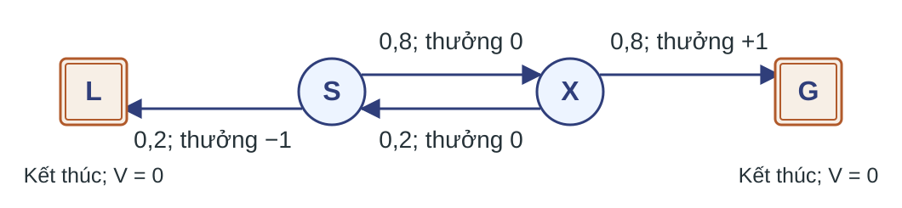
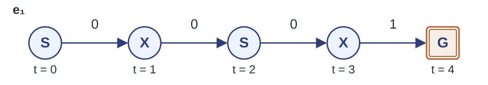
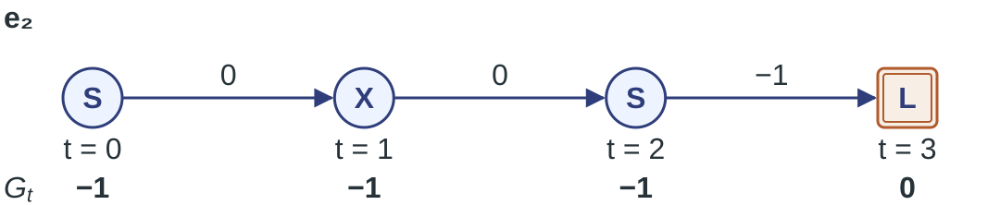
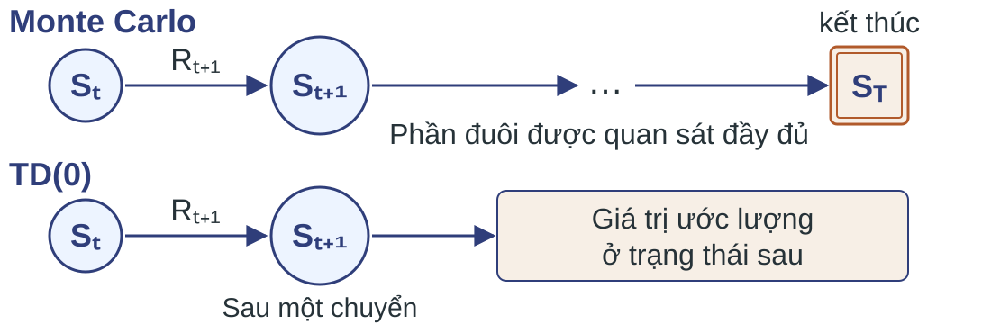
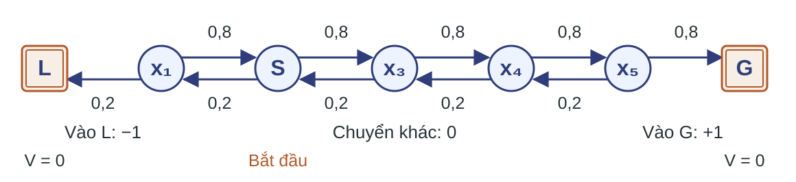
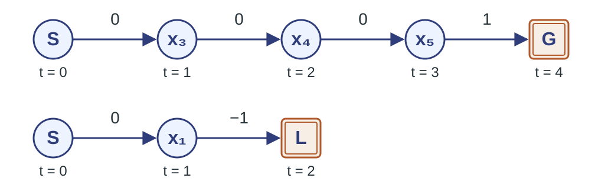
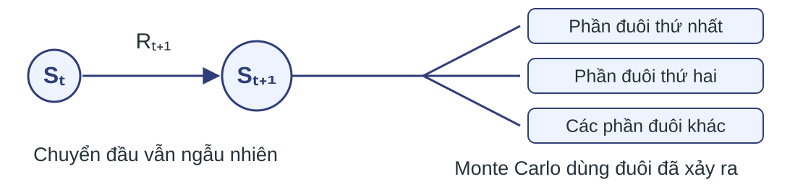
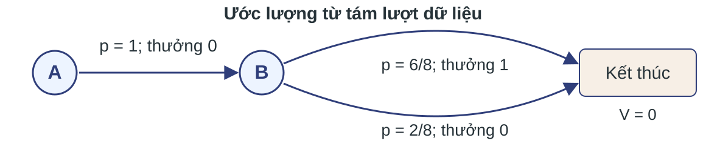

2. Lợi tức và ước lượng Monte CarloMuốn ước lượng giá trị khi chưa biết mô hình, phải lấy trung bình lợi tức của các lượt đã kết thúc.
Lượt · Lợi tức · Lần ghé · Trung bình gia tăng · Hội tụ
Đối tượng cần tính là $v_\pi(s)=\mathbb E_\pi[G_t\mid S_t=s]$, và dữ liệu là các mẫu chuyển. Một kỳ vọng được ước lượng bằng trung bình mẫu: định nghĩa lợi tức của lượt kết thúc, chọn mẫu theo lần ghé, tính trung bình gia tăng, ghép thành thuật toán và chứng minh hội tụ. Kết quả là khung cập nhật cùng giới hạn phải chờ lượt kết thúc; TD(0) gỡ giới hạn đó.
Ví dụ: tàu đổ bộ thu nhỏ
Nhu cầu: ước lượng $v_\pi$ khi chưa biết xác suất $0{,}8$ và $0{,}2$ (mô hình chỉ để kiểm tra).

Tàu đổ bộ thu nhỏ (còn gọi là dãy bốn ô) xuất phát ở $\mathrm S$, $\gamma=1$.
Chính sách luôn tiến; vào $\mathrm L$ (rơi) nhận $-1$, vào $\mathrm G$ (nằm yên) nhận $+1$.
Trực quan. Trung bình lợi tức quan sát ước lượng kỳ vọng $v_\pi(s)$.
$\mathcal S=\{\mathrm S,\mathrm X\}$; $\mathrm L$ và $\mathrm G$ là trạng thái kết thúc. Hành động duy nhất là tiến; nhiễu động cơ đưa tàu sang phải với xác suất $0{,}8$ và đẩy lùi với xác suất $0{,}2$. Phần thưởng nằm trên chuyển đi vào ô biên. Hai xác suất là mô hình mà tác tử không được biết; chúng chỉ dùng để tính giá trị chuẩn, đo sai số ở mạch 2 và so hai bảng ở mạch 4. Một mẫu chỉ là một kết quả đã xảy ra: mẫu $(\mathrm S,\mathrm{tien},0,\mathrm X)$ có phần thưởng $0$, trong khi kỳ vọng lợi tức từ $\mathrm S$ dương. Hai lượt dùng xuyên suốt bài là $e_1:\mathrm S\to\mathrm X\to\mathrm S\to\mathrm X\to\mathrm G$ và $e_2:\mathrm S\to\mathrm X\to\mathrm S\to\mathrm L$.
Nguồn: Bài giảng gốc (2025–2026), trang 15–17, 19–20; Bài tập tuần 5 (2025–2026), bài 2, 7; Sutton và Barto (2018), §5.1, trang 92; ghi chú bài giảng, Ví dụ 05.1.
Ví dụ: lợi tức trên hai lượt


Tính $G_t$ với $\gamma=1$: tổng phần thưởng từ sau $t$ đến khi lượt kết thúc.
$e_1$: $G_0=G_1=G_2=G_3=1$; $e_2$: $G_0=G_1=G_2=-1$; tại trạng thái kết thúc, $G=0$.
Diễn giải: lợi tức bằng nhau trong mỗi lượt vì $\gamma=1$ và chỉ có phần thưởng cuối.
Phần đuôi sau $t=1$ của $e_1$ gồm ba chuyển từ $\mathrm X$ tới $\mathrm G$, tổng phần thưởng $0+0+1=1=G_1$. Mỗi thời điểm có lợi tức riêng; hai lần ở $\mathrm S$ trong $e_1$ là hai thời điểm $t=0$ và $t=2$. Lợi tức bằng nhau trong một lượt là hệ quả của $\gamma=1$ và việc chỉ có phần thưởng cuối, không phải tính chất chung: với $\gamma=0{,}9$, $e_1$ cho $(G_0,G_1,G_2,G_3)=(0{,}729;\ 0{,}81;\ 0{,}9;\ 1)$. Hai lượt này là dữ liệu chung cho Monte Carlo, TD(0) và phần so sánh của bài.
Nguồn: Bài giảng gốc (2025–2026), trang 20, 22, 29; ghi chú bài giảng, Ví dụ 05.2.
Lượt và lợi tức
Định nghĩa. Lượt sinh theo $\pi$ dừng tại $T=\min\{t:S_t\notin\mathcal S\}$; lợi tức từ $t<T$ là
$$G_t=\sum_{k=t}^{T-1}\gamma^{k-t}R_{k+1},\qquad G_T=0.$$
Mệnh đề. Với mọi $t<T$, $G_t=R_{t+1}+\gamma G_{t+1}$.
Chứng minh. Tách số hạng $k=t$, đặt $\gamma$ ra ngoài phần còn lại.
Lưu ý: $\gamma=1$ chỉ dùng khi lượt kết thúc hầu chắc chắn (almost surely).
Lượt bị cắt ngắn (truncated episode) không có $T$.
$T$ là thời điểm đầu tiên tàu vào một trạng thái kết thúc; phần thưởng đầu tiên sau $S_t$ là $R_{t+1}$ và không bị chiết khấu. Truy hồi cho phép tính mọi $G_t$ ngược từ $G_T=0$ bằng $T$ phép tính; với $e_2$ và $\gamma=0{,}9$: $G_2=-1$, $G_1=-0{,}9$, $G_0=-0{,}81$. Lượt bị cắt ngắn (truncated episode), như lượt Lunar Lander dừng ở bước $1000$ khi tàu chưa rơi cũng chưa nằm yên, thiếu phần đuôi, nên tổng đã quan sát không phải $G_0$. Với $\gamma=1$ cần $T$ hữu hạn hầu chắc chắn; trên tàu đổ bộ thu nhỏ, lượt kết thúc trong hai bước với xác suất $0{,}84$ từ mỗi trạng thái (Bổ đề 05.5 của ghi chú bài giảng).
Nguồn: Bài giảng gốc (2025–2026), trang 17; Sutton và Barto (2018), §3.3–3.4, trang 54–57; ghi chú bài giảng, Định nghĩa 05.3, Mệnh đề 05.4.
Lần ghé đầu tiên và mọi lần ghé
Nhu cầu: chọn lợi tức đưa vào trung bình khi $\mathrm S$ ở cả $t=0$ và $t=2$ của $e_1$
Trạng thái Sớm nhất mỗi lượt Mọi thời điểm $\mathrm S$ $(1,-1)$, trung bình $0$ $(1,1,-1,-1)$, trung bình $0$ $\mathrm X$ $(1,-1)$, trung bình $0$ $(1,1,-1)$, trung bình $1/3$
Định nghĩa. Lần ghé (visit) $s$ là thời điểm $t<T$ có $S_t=s$; đặt $t_1<t_2<\cdots$
Lần ghé đầu tiên (first-visit) lấy $G_{t_1}$; mọi lần ghé (every-visit) lấy mọi $G_{t_k}$
Trong $e_1$, $\mathrm X$ ở $t=1$ và $t=3$; trong $e_2$, $\mathrm S$ ở $t=0$ và $t=2$, $\mathrm X$ ở $t=1$. Cột giữa là quy tắc lần ghé đầu tiên, cột phải là quy tắc mọi lần ghé, với các lợi tức của ví dụ hai lượt. Tại $\mathrm X$, mọi lần ghé lấy hai mẫu từ $e_1$ và một mẫu từ $e_2$, nên kết cục của $e_1$ nhận trọng số $2/3$. Lần ghé đầu tiên được xác định riêng trong từng lượt, theo chiều thời gian. Hai quy tắc khác nhau ở số mẫu và quan hệ giữa các mẫu: mẫu lần ghé đầu tiên từ các lượt độc lập thì độc lập; mẫu mọi lần ghé trong cùng một lượt dùng chung phần đuôi.
Nguồn: Bài giảng gốc (2025–2026), trang 18, 20, 22; Sutton và Barto (2018), §5.1, trang 92; ghi chú bài giảng, Ví dụ 05.3, Định nghĩa 05.6.
Kỳ vọng của lợi tức sau lần ghé
Trực quan. Phần lượt sau lần quay lại $\mathrm S$ như lượt mới từ $\mathrm S$
Giả thiết: $\mathcal S$ hữu hạn, $\pi$ cố định, Markov dừng; lượt kết thúc hầu chắc chắn; phần thưởng bị chặn.
Mệnh đề. Với $N_e(s)$ là số lần ghé $s$ trong lượt, $k\ge1$, $\Pr(N_e(s)\ge k)>0$:
$$\mathbb E_\pi\bigl[G_{t_k}\mid N_e(s)\ge k\bigr]=v_\pi(s).$$
Ý nghĩa: mẫu của cả hai quy tắc có kỳ vọng đúng (Mệnh đề 05.7).
Chứng minh: biến cố "lần ghé thứ $k$ xảy ra tại $t$" chỉ phụ thuộc $S_0,\ldots,S_t$, tức lịch sử $H_t$. Theo tính Markov của lợi tức (Bài 03), $\mathbb E_\pi[G_t\mid H_t]=v_\pi(S_t)$; nhân với chỉ báo của biến cố, lấy kỳ vọng rồi cộng theo $t$ được kết luận. Giả thiết kết thúc và phần thưởng bị chặn chỉ dùng để đổi thứ tự tổng và kỳ vọng. Bỏ tính Markov: trên ô gộp của Lunar Lander, một ô xuất hiện $48$ lần trong một lượt, lợi tức $55{,}22$ ở lần ghé đầu tiên và trung bình $67{,}09$ trên $48$ lần; không có lý do để hai kỳ vọng bằng nhau. Mệnh đề nói về từng mẫu, không về trung bình của các mẫu mọi lần ghé trong số lượt hữu hạn.
Nguồn: Sutton và Barto (2018), §5.1, trang 92–93; ghi chú bài giảng, Mục 2.2.
Ước lượng Monte Carlo
Định nghĩa. Cố định một quy tắc lần ghé; $g_i(s)$ là mẫu lợi tức thứ $i$ chọn tại $s$.
$$V_n(s)=\frac1n\sum_{i=1}^{n}g_i(s)$$
là ước lượng Monte Carlo sau $n\ge1$ mẫu của riêng $s$ (Định nghĩa 05.8).
Sau hai lượt, $\mathrm X$ có $n=3$ theo mọi lần ghé, $n=2$ theo lần ghé đầu tiên.
Lưu ý: $V_2(\mathrm S)=0$ chỉ phản ánh một lượt nằm yên và một lượt rơi; nó không phải $v_\pi(\mathrm S)$.
Khi $n=0$, bảng giữ giá trị khởi tạo. Ước lượng Monte Carlo thay kỳ vọng $\mathbb E_\pi[G_t\mid S_t=s]$ bằng trung bình mẫu, và mỗi trạng thái được ước lượng riêng: $V_n(\mathrm S)$ không dùng $V_n(\mathrm X)$. Điểm này khác TD(0) ở mạch 3, nơi mục tiêu tại $\mathrm S$ đọc giá trị tại $\mathrm X$. Bài giảng gốc lưu bộ đếm $N(s)$ và tổng các mẫu của từng trạng thái rồi lấy thương; cách lưu đó cho cùng $V_n(s)$. Hai cột của bảng lần ghé là định nghĩa áp dụng với hai quy tắc.
Nguồn: Bài giảng gốc (2025–2026), trang 18; Sutton và Barto (2018), §5.1, trang 92–93.
Ví dụ: trung bình tại $\mathrm X$ khi thêm mẫu thứ ba
Nhu cầu: tính trung bình mới chỉ từ trung bình cũ, số mẫu và mẫu mới.
Tại $\mathrm X$, theo mọi lần ghé: $V_2(\mathrm X)=1$ từ $(1,1)$; mẫu mới $g_3(\mathrm X)=-1$.
Tính lại từ tổng: $V_3(\mathrm X)=\dfrac{2\cdot1+(-1)}{3}=\dfrac13$.
Sửa trung bình cũ: $V_3(\mathrm X)=1+\dfrac13\bigl(-1-1\bigr)=\dfrac13$.
Trung bình dịch về phía mẫu mới Trục số từ âm 1 đến 1. Mẫu mới âm 1 vẽ bằng hình vuông, trung bình cũ 1 vẽ bằng hình tròn rỗng, trung bình mới 1/3 vẽ bằng hình tròn đặc. Mũi tên từ 1 đến 1/3 dài bằng một phần ba đoạn nét đứt từ âm 1 đến 1, đoạn có độ dài 2. mẫu mới trung bình mới trung bình cũ −1 0 1/3 1 khoảng cách 2; mũi tên dài 2/3 Diễn giải: trung bình dịch $2/3$ về phía mẫu mới, tức một phần ba khoảng cách $2$.
Định nghĩa của ước lượng Monte Carlo cần tổng của mọi mẫu đã chọn, nên lưu danh sách mẫu tốn bộ nhớ tăng theo số mẫu. Tổng của hai mẫu cũ bằng số mẫu nhân trung bình, tức $2\cdot1$; vì vậy cả hai cách chỉ cần ba số: trung bình cũ, số mẫu và mẫu mới. Cách thứ hai dịch trung bình cũ về phía mẫu mới một phần $1/n$ khoảng cách, với $n=3$. Một cách trực quan, mẫu mới nhỏ hơn trung bình cũ thì trung bình giảm, và mức giảm nhỏ dần khi đã có nhiều mẫu. Kết quả $1/3$ khớp cột mọi lần ghé tại $\mathrm X$.
Nguồn: Sutton và Barto (2018), §2.4, trang 30–31; ghi chú bài giảng, Ví dụ 05.4.
Trung bình gia tăng
Mệnh đề. Trung bình gia tăng (incremental mean): với $V_0(s)$ tùy ý,
$$V_n(s)=V_{n-1}(s)+\frac1n\bigl[g_n(s)-V_{n-1}(s)\bigr]$$
đúng với mọi $n\ge1$ (Mệnh đề 05.9).
Chứng minh. Tổng $n-1$ mẫu đầu là $(n-1)V_{n-1}(s)$; tách mẫu thứ $n$ rồi nhóm theo $\tfrac1n$.
Ý nghĩa: $g_n(s)$ là mục tiêu cập nhật, $1/n$ là bước học; dạng chung $V(s)\leftarrow V(s)+\alpha[Y-V(s)]$.
Lưu ý: bộ đếm $N(s)$ thuộc riêng $s$, tăng trước khi dùng bước $1/N(s)$.
Với $n=1$, vế phải bằng $V_0(s)+g_1(s)-V_0(s)=g_1(s)$, nên mẫu đầu tiên xóa hoàn toàn giá trị khởi tạo. Với $n\ge2$: $V_n=\frac1n[(n-1)V_{n-1}+g_n]=(1-\frac1n)V_{n-1}+\frac1ng_n$. Đại lượng $g_n(s)-V_{n-1}(s)$ là sai lệch giữa mục tiêu và ước lượng cũ. Dạng chung $V(s)\leftarrow V(s)+\alpha[Y-V(s)]$, với mọi phần tử khác giữ nguyên, là Định nghĩa 05.10 của ghi chú bài giảng; Monte Carlo và TD(0) là hai lựa chọn của $Y$. Dùng nghịch đảo thời điểm toàn cục thay cho $1/N(s)$ không còn cho trung bình mẫu tại $s$.
Nguồn: Bài giảng gốc (2025–2026), trang 21; Sutton và Barto (2018), §2.4, trang 30–31.
Bước học hằng
Nhu cầu: theo kịp môi trường thay đổi (ngoài giả thiết dừng); bước $1/n$ cho mẫu thứ $1000$ trọng số $1/1000$.
Mẫu lần ghé đầu tiên tại $\mathrm X$ Trung bình mẫu Bước hằng $\alpha=0{,}5$ $+1$ $1$ $0+0{,}5(1-0)=0{,}5$ $-1$ $0$ $0{,}5+0{,}5(-1-0{,}5)=-0{,}25$
Mệnh đề. Với $\alpha$ hằng, $V_n=(1-\alpha)^nV_0+\sum_{i=1}^{n}\alpha(1-\alpha)^{n-i}g_i$ (Mệnh đề 05.11).
Ý nghĩa: mẫu cách $j$ lần cập nhật có trọng số $\alpha(1-\alpha)^j$; khởi tạo còn trọng số $(1-\alpha)^n$.
Bài giảng gốc thay $1/n$ bằng hằng số để theo kịp môi trường thay đổi theo thời gian, trường hợp nằm ngoài giả thiết môi trường dừng của bài; $\alpha=0{,}5$ được giữ để đối chiếu ví dụ của nguồn. Bảng dùng hai mẫu lần ghé đầu tiên $(1,-1)$ tại $\mathrm X$ từ khởi tạo $0$. Viết lại: $-0{,}25=0{,}25\cdot0+0{,}25\cdot1+0{,}5\cdot(-1)$, khớp mệnh đề với $n=2$. Chứng minh bằng quy nạp theo $n$ từ $V_n=(1-\alpha)V_{n-1}+\alpha g_n$; tổng các trọng số bằng $1$. Với $\alpha=0{,}5$, trọng số theo tuổi mẫu là $0{,}5$, $0{,}25$, $0{,}125$. Với $\alpha=1$, $V_n=g_n$. Khi môi trường dừng, bước hằng làm ước lượng dao động mãi quanh $v_\pi(s)$; phương sai giới hạn được nêu cùng định lý hội tụ Monte Carlo mọi lần ghé.
Nguồn: Bài giảng gốc (2025–2026), trang 20–23; Sutton và Barto (2018), §2.5, trang 32–33.
Ví dụ: bốn cấu hình Monte Carlo trên hai lượt
Cấu hình ($\gamma=1$, khởi tạo $0$) Sau $e_1$ Sau $e_2$ Lần ghé đầu tiên, $1/N(s)$ $(1;\ 1)$ $(0;\ 0)$ Mọi lần ghé, $1/N(s)$ $(1;\ 1)$ $(0;\ 1/3)$ Lần ghé đầu tiên, $\alpha=0{,}5$ $(0{,}5;\ 0{,}5)$ $(-0{,}25;\ -0{,}25)$ Mọi lần ghé, $\alpha=0{,}5$ $(0{,}75;\ 0{,}75)$ $(-0{,}5625;\ -0{,}125)$
Nhận xét. Quy tắc lần ghé chọn mẫu, quy tắc bước học kết hợp mẫu; báo cáo nêu cả hai.
Mỗi ô ghi $(V(\mathrm S);\ V(\mathrm X))$; mỗi cấu hình chạy riêng trên $e_1$ rồi $e_2$. Hàng cuối, từng bước: trong $e_1$, mỗi trạng thái nhận hai mẫu $1$, nên $0\to0{,}5\to0{,}75$; trong $e_2$, $\mathrm S$ nhận hai mẫu $-1$: $0{,}75+0{,}5(-1-0{,}75)=-0{,}125$, rồi $-0{,}125+0{,}5(-1+0{,}125)=-0{,}5625$; $\mathrm X$ nhận một mẫu: $-0{,}125$. Hai hàng đầu khớp các trung bình của bảng lần ghé. Hai lựa chọn độc lập nhau (Nhận xét 05.12 của ghi chú bài giảng): Bài tập tuần 5, bài 5 liệt kê lần ghé đầu tiên, trung bình mẫu và bước hằng như ba phương pháp ngang hàng, nhưng chúng thuộc hai trục khác nhau. Với bước hằng, báo cáo còn cần nêu giá trị khởi tạo.
Nguồn: Bài giảng gốc (2025–2026), trang 22, 29; Bài tập tuần 5 (2025–2026), bài 5, 7; ghi chú bài giảng, Ví dụ 05.5.
Ví dụ: một lượt của Monte Carlo lần ghé đầu tiên
Tính một lượt: sau $e_1$, $V=(1;\ 1)$, $N=(1;\ 1)$; lượt $e_2$, $\gamma=1$; pha 1 tính ngược $G_2=G_1=G_0=-1$.
Pha 2 duyệt xuôi; tập đã ghé $\mathcal H$ bắt đầu rỗng; bước $1/N(s)$.
$t$ $S_t$ Thao tác $N(S_t)$ Giá trị mới $0$ $\mathrm S$ cập nhật $2$ $1+\tfrac12(-1-1)=0$ $1$ $\mathrm X$ cập nhật $2$ $1+\tfrac12(-1-1)=0$ $2$ $\mathrm S$ bỏ qua, $\mathrm S\in\mathcal H$ $2$ $0$
Pha 1 bắt đầu từ $G_3=0$: $G_2=-1+1\cdot0$, $G_1=0+1\cdot(-1)$, $G_0=0+1\cdot(-1)$. Pha 2 duyệt xuôi để nhận ra lần ghé đầu tiên theo thời gian; mỗi trạng thái được thêm vào $\mathcal H$ ngay sau lần cập nhật. Kết quả $(V(\mathrm S),V(\mathrm X))=(0;\ 0)$ và $N=(2;\ 2)$, khớp hàng đầu của bảng bốn cấu hình. Nếu vừa duyệt lùi vừa loại trạng thái đã gặp, mẫu được giữ tại $\mathrm S$ là $G_2$, lần ghé cuối cùng; trong $e_2$ hai giá trị trùng nhau, nhưng với $e_1$ và $\gamma=0{,}9$ thì $G_2=0{,}9$ khác $G_0=0{,}729$.
Nguồn: Sutton và Barto (2018), §5.1, trang 92; ghi chú bài giảng, Ví dụ 05.6.
Thuật toán dự đoán Monte Carlo
Đầu vào: $\pi,\gamma$; $M$ lượt; quy tắc lần ghé; lịch bước học (step-size schedule) $\alpha_n(s)$. Đầu ra: bảng $V$.
Giả thiết: lượt sinh theo $\pi$, kết thúc tại trạng thái kết thúc thật.
Thuật toán. Khởi tạo $V$ tùy ý, $N=0$; $V=0$ tại trạng thái kết thúc.
Lặp $m=1,\ldots,M$:
Sinh một lượt theo $\pi$ tới $S_T$ kết thúc.
Đặt $G_T=0$; với $t=T-1,\ldots,0$: $G_t=R_{t+1}+\gamma G_{t+1}$.
$M$ là ngân sách lượt; đầu ra là bảng $V$ ước lượng $v_\pi$ trên $\mathcal S$. Lịch bước học là $\alpha_n(s)=1/n$ cho trung bình mẫu hoặc một hằng số $\alpha$ cho bước hằng. Bước 2 sinh trọn một lượt trước khi tính bất kỳ lợi tức nào, vì $G_t$ cần mọi phần thưởng tới $T$. Bước 3 là pha tính ngược của ví dụ tính tay một lượt. Các bước 2 đến 5 nằm trong vòng lặp của bước 1, và lề thụt vào chỉ cấp vòng lặp. $T$ là thời điểm một lượt cụ thể kết thúc.
Nguồn: Sutton và Barto (2018), §5.1, trang 92; §2.4, trang 30–31; ghi chú bài giảng, Thuật toán 05.13.
Thuật toán dự đoán Monte Carlo
Trong vòng lặp của bước 1:
Đặt $\mathcal H=\varnothing$; duyệt xuôi $t=0,\ldots,T-1$, đặt $s=S_t$:
Nếu dùng mọi lần ghé, hoặc $s\notin\mathcal H$: tăng $N(s)$ và đặt $n=N(s)$; $V(s)\leftarrow V(s)+\alpha_n(s)\bigl[G_t-V(s)\bigr]$; thêm $s$ vào $\mathcal H$.
Hết $M$ lượt: trả về $V$; hết một lượt chỉ mở lượt sau (Thuật toán 05.13).
Lưu ý: bỏ lượt bị cắt ngắn; không cập nhật trạng thái kết thúc.
Bước 4 mở pha duyệt xuôi, nơi lần ghé đầu tiên được nhận ra theo chiều thời gian; bước 5 nằm trong vòng duyệt đó. Phép cập nhật nằm trong điều kiện của bước 5; khi điều kiện sai, thời điểm $t$ bị bỏ qua: ở lần ghé thứ hai tại $\mathrm S$ của $e_2$, cả bộ đếm lẫn bảng giữ nguyên. Hai bước này, chạy trên $e_1$ rồi $e_2$ với bước $1/N(s)$, cho đúng hàng đầu của bảng bốn cấu hình. Bước 5 dùng bộ đếm của riêng trạng thái, đúng điều kiện của trung bình gia tăng. Chi phí một lượt dài $T$ là $O(T)$ phép tính và $O(T)$ bộ nhớ tạm, cộng $O(\lvert\mathcal S\rvert)$ cho $V$ và $N$. Trong bài thực hành Lunar Lander, hàm cài thuật toán này trên bảng $9216$ ô bỏ $42$ lượt bị cắt ngắn ở bước $1000$.
Nguồn: Sutton và Barto (2018), §5.1, trang 92; ghi chú bài giảng, Thuật toán 05.13, Nhận xét 05.14.
Ví dụ: sai số của trung bình lần ghé đầu tiên tại $\mathrm S$
Nhu cầu: biết sai số giảm thế nào khi số lượt tăng.
Mẫu lần ghé đầu tiên tại $\mathrm S$: $G_0=\pm1$ (nằm yên, rơi); $\mathbb E[G_0]=v_\pi(\mathrm S)=11/21$ (giải từ mô hình, chỉ để đo sai số).
$$\operatorname{Var}(G_0)=1-\Bigl(\frac{11}{21}\Bigr)^2=\frac{320}{441}\approx0{,}726$$
Tính độ lệch chuẩn của trung bình $n$ lượt độc lập: $0{,}852/\sqrt n$; $0{,}602$ khi $n=2$, $0{,}085$ khi $n=100$.
Trực quan. Trung bình của mẫu độc lập tiến tới kỳ vọng.
Giá trị $11/21$ là nghiệm của hệ Bellman kỳ vọng $v_\pi(\mathrm S)=-0{,}2+0{,}8\,v_\pi(\mathrm X)$, $v_\pi(\mathrm X)=0{,}8+0{,}2\,v_\pi(\mathrm S)$, giải từ mô hình chỉ để đo sai số. Gọi $h$ là xác suất nằm yên; $2h-1=11/21$ cho $h=16/21$. Vì $G_0^2=1$, phương sai là $1-(11/21)^2$. Sau hai lượt $V_2(\mathrm S)=0$, nên $V_2(\mathrm S)-v_\pi(\mathrm S)\approx-0{,}524$; trị tuyệt đối $0{,}524$ nhỏ hơn một độ lệch chuẩn $0{,}602$, nên không mâu thuẫn với một ước lượng tốt. Độ lệch chuẩn giảm như $1/\sqrt n$: muốn không vượt $0{,}05$ cần $291$ lượt (Bài tập 05.5 của ghi chú bài giảng).
Nguồn: Sutton và Barto (2018), §5.1, trang 93; ghi chú bài giảng, Ví dụ 05.7.
Hội tụ của Monte Carlo lần ghé đầu tiên
Định nghĩa. $\hat v_n$ không chệch (unbiased) khi $\mathbb E[\hat v_n]=v$; hội tụ hầu chắc chắn khi $\Pr(\hat v_n\to v)=1$.
Giả thiết: $\mathcal S$ hữu hạn, Markov dừng, $\pi$ cố định; lượt độc lập cùng phân phối, kết thúc hầu chắc chắn.
Giả thiết: phần thưởng bị chặn; ghé $s$ với xác suất dương; bước $1/N(s)$.
Định lý. $V_n(s)$ không chệch, hội tụ hầu chắc chắn về $v_\pi(s)$ (Định lý 05.16).
Chứng minh: các mẫu lần ghé đầu tiên từ những lượt độc lập là độc lập cùng phân phối, kỳ vọng $v_\pi(s)$; luật mạnh số lớn cho kết luận. Định lý còn cho phương sai $\sigma^2(s)/n$ của $V_n(s)$, với $\sigma^2(s)$ là phương sai của mẫu lần ghé đầu tiên khi lượt có ghé $s$. Không chệch và hội tụ là hai tính chất độc lập: ước lượng bằng mẫu đầu tiên không chệch nhưng không hội tụ. Bỏ kết thúc thì lợi tức không xác định; bỏ xác suất ghé dương thì $s$ giữ giá trị khởi tạo; bỏ bước $1/N(s)$ thì trung bình có trọng số dao động; bỏ tính Markov thì giới hạn là lợi tức kỳ vọng theo lần ghé, không phải $v_\pi(s)$.
Nguồn: Sutton và Barto (2018), §5.1, trang 93; ghi chú bài giảng, Định nghĩa 05.15, Định lý 05.16.
Hội tụ của Monte Carlo mọi lần ghé
Định lý. Giả thiết như lần ghé đầu tiên, dùng mọi lần ghé.
Kết luận: ước lượng sau $M$ lượt thỏa $V^{(M)}(s)\to v_\pi(s)$ hầu chắc chắn khi $M\to\infty$ (Định lý 05.17).
Lưu ý: trung bình mọi lần ghé có thể chệch khi số lượt hữu hạn.
Lưu ý: bước hằng $\alpha$ không hội tụ; với mẫu độc lập cùng phân phối, phương sai $\sigma^2$:
$$\operatorname{Var}(V_n)\to\frac{\alpha\sigma^2}{2-\alpha}>0.$$
Chứng minh: $V^{(M)}(s)=\sum_eZ_e/\sum_eN_e(s)$, với $Z_e$ tổng các mẫu của lượt $e$; mẫu trong cùng lượt phụ thuộc nhau nên luật số lớn áp dụng theo lượt, $\mathbb E[Z_e]=v_\pi(s)\,\mathbb E[N_e(s)]$. Trạng thái $\mathrm C$ cho thấy độ chệch: ở lại $\mathrm C$ với xác suất $1/2$ và phần thưởng $1$, kết thúc với phần thưởng $0$; với $\gamma=1$, $v_\pi(\mathrm C)=1$, nhưng trung bình mọi lần ghé của một lượt có kỳ vọng $1/2$. Tại $\mathrm S$, $\alpha=0{,}5$, $\sigma^2=320/441$ cho $0{,}242$. Trong bài thực hành Lunar Lander, thước đo $J$ là trung bình của $(G_t-V(S_t))^2$ trên các mẫu của lượt kiểm tra; sau $2000$ lượt, mọi lần ghé cho $J=1627$ với $1/N(s)$ và $1802$ với $\alpha=0{,}02$.
Nguồn: Sutton và Barto (2018), §5.1, trang 93, dẫn Singh và Sutton (1996); ghi chú bài giảng, Nhận xét 05.18, 05.19, Tình huống 05.1.
Bài tập: chọn mẫu Monte Carlo tại $\mathrm S$
$e_1:\mathrm S\to\mathrm X\to\mathrm S\to\mathrm X\to\mathrm G$, phần thưởng $(0,0,0,1)$; $e_2:\mathrm S\to\mathrm X\to\mathrm S\to\mathrm L$, phần thưởng $(0,0,-1)$.
$\gamma=0{,}9$; bảng ban đầu bằng $0$.
Câu hỏi: (a) Tại $\mathrm S$, lập dãy lợi tức theo hai quy tắc lần ghé; tính hai trung bình.
(b) Lần ghé đầu tiên với $\alpha=0{,}5$: tính $V(\mathrm S)$ sau mỗi lượt; giải thích khác biệt với (a).
Bài tập kiểm hai năng lực: chọn mẫu theo quy tắc lần ghé và phân biệt tập mẫu với cách kết hợp mẫu. Với $\gamma=0{,}9$, hai lần ghé $\mathrm S$ trong cùng một lượt có lợi tức khác nhau, nên hai quy tắc cho hai tập mẫu khác nhau. Gợi ý: tính lợi tức ngược từ cuối mỗi lượt; ở câu (b), viết kết quả thành tổng có trọng số theo mệnh đề bước học hằng.
Nguồn: Bài giảng gốc (2025–2026), trang 20, 22; Bài tập tuần 5 (2025–2026), bài 5, 7, đổi hệ số chiết khấu; tệp bài tập Bài 05, Bài tập 05.18, câu (a), (b).
Bài tập: chọn mẫu Monte Carlo tại $\mathrm S$
Lời giải: tại $\mathrm S$, $e_1$ cho $G_0=0{,}729$, $G_2=0{,}9$; $e_2$ cho $G_0=-0{,}81$, $G_2=-1$.
(a) Lần ghé đầu tiên: $(0{,}729;\ -0{,}81)$, trung bình $-0{,}0405$; mọi lần ghé: thêm $0{,}9$ và $-1$, trung bình $-0{,}04525$.
(b) Sau $e_1$: $0+0{,}5\cdot0{,}729=0{,}3645$; sau $e_2$: $0{,}3645+0{,}5(-0{,}81-0{,}3645)=-0{,}22275$.
Theo Mệnh đề 05.11, $-0{,}22275=0{,}25\cdot0+0{,}25\cdot0{,}729+0{,}5\cdot(-0{,}81)$.
Cùng tập mẫu lần ghé đầu tiên, nhưng bước hằng giữ trọng số khởi tạo, ưu tiên mẫu mới.
Lợi tức tính ngược: trong $e_1$, $G_3=1$, $G_2=0{,}9$, $G_1=0{,}81$, $G_0=0{,}729$; trong $e_2$, $G_2=-1$, $G_1=-0{,}9$, $G_0=-0{,}81$. Trung bình mẫu đặt trọng số $0{,}5$ cho mỗi mẫu và $0$ cho giá trị khởi tạo; bước hằng $0{,}5$ đặt $0{,}25$ cho khởi tạo, $0{,}25$ cho mẫu cũ và $0{,}5$ cho mẫu mới. Với $\gamma=1$, cả hai quy tắc cho trung bình $0$ tại $\mathrm S$; chiết khấu làm hai lần ghé trong một lượt mang lợi tức khác nhau. Lỗi thường gặp: tính lợi tức xuôi từ đầu lượt, hoặc dùng mọi lần ghé ở câu (b).
Nguồn: Phép tính trực tiếp theo Định nghĩa 05.3, 05.6 và Mệnh đề 05.11 của ghi chú bài giảng.
3. Sai phân thời gian TD(0)Muốn cập nhật trước khi lượt kết thúc, phải thay phần lợi tức chưa quan sát bằng giá trị ước lượng.
Mục tiêu một bước · Sai số TD · Trạng thái kết thúc · Tự chuyển · Lượt bị cắt ngắn
Khung $V(s)\leftarrow V(s)+\alpha[Y-V(s)]$ với mục tiêu là lợi tức đã cho hai định lý hội tụ với bước $1/N(s)$, nhưng mọi kết quả đó cần lượt kết thúc trước khi cập nhật. Khung được giữ và mục tiêu được đổi: phần thưởng vừa nhận cộng giá trị ước lượng ở trạng thái sau. Kết quả gồm thuật toán TD(0), các trường hợp biên và hai bảng trên cùng hai lượt, được đặt cạnh nhau ở mạch 4.
Mục tiêu một bước
Nhu cầu: cập nhật $V(\mathrm S)$ ngay sau chuyển đầu $\mathrm S\to\mathrm X$ của $e_2$, khi Monte Carlo chưa có $G_0$ của $e_2$.

Trực quan. Trong $G_t=R_{t+1}+\gamma G_{t+1}$, phần chưa quan sát $G_{t+1}$ có kỳ vọng $v_\pi(S_{t+1})$.
Thay $G_{t+1}$ bằng $V(S_{t+1})$ của bảng đang học: mục tiêu bootstrap (bootstrap target).
Sau chuyển đầu $\mathrm S\to\mathrm X$ của $e_2$, tàu có thể còn nằm yên hoặc rơi, nên $G_0$ của $e_2$ chưa tính được; bảng $V$ sau $e_1$ thì đã chứa một dự đoán cho phần còn lại từ $\mathrm X$. Truy hồi của lợi tức tách $G_t$ thành phần đã biết và phần chưa biết. Hình so sánh lượng dữ liệu hai mục tiêu cần: hàng trên kéo dài tới trạng thái kết thúc, hàng dưới dừng sau một chuyển. So với Bài 04, mục tiêu một bước thay kỳ vọng theo mọi trạng thái kế tiếp bằng một mẫu; Sutton và Barto gọi đây là kết hợp lấy mẫu của Monte Carlo với bootstrap của quy hoạch động.
Nguồn: Bài giảng gốc (2025–2026), trang 24–25; Sutton và Barto (2018), §6.1, trang 119–120.
Ví dụ: một bước TD(0) sau chuyển $\mathrm S\to\mathrm X$
Tàu đổ bộ thu nhỏ, $\gamma=1,\ \alpha=0{,}5$; bảng TD(0) sau $e_1$: $V(\mathrm S)=0,\ V(\mathrm X)=0{,}5$.
Tính $V(\mathrm S)$ mới sau chuyển đầu $\mathrm S\to\mathrm X$ của $e_2$, phần thưởng $0$.
Mục tiêu $Y_t$ là phần thưởng cộng $\gamma V(\mathrm X)$; sai số TD (TD error) $\delta_t$ là $Y_t-V(\mathrm S)$.
Chuyển Thưởng Mục tiêu $Y_t$ Sai số TD $\delta_t$ $V(\mathrm S)$ sau bước ${\mathrm S\to\mathrm X}$ $0$ ${0+0{,}5=0{,}5}$ ${0{,}5-0=0{,}5}$ ${0+0{,}5\cdot0{,}5=0{,}25}$
Diễn giải: mục tiêu gồm phần thưởng quan sát và dự đoán từ $\mathrm X$; chỉ $V(\mathrm S)$ đổi.
Bước học $0{,}5$ dịch $V(\mathrm S)$ một nửa khoảng cách tới mục tiêu; $V(\mathrm X)=0{,}5$ giữ nguyên. Bảng $(0;\ 0{,}5)$ là kết quả TD(0) trên $e_1$ từ bảng $0$; phép tính đầy đủ nằm ở ví dụ TD(0) trên lượt thứ nhất. Mục tiêu dùng một chuyển thật và một con số của bảng, nên chất lượng của nó phụ thuộc bảng đang có; Monte Carlo phải chờ $e_2$ kết thúc mới có mục tiêu tại $\mathrm S$.
Nguồn: Sutton và Barto (2018), §6.1, trang 119–120; ghi chú bài giảng, Ví dụ 05.8.
Mục tiêu và sai số TD
Định nghĩa. Cho bảng $V_t$ ngay trước chuyển $t\to t+1$, $V_t=0$ tại trạng thái kết thúc, và mẫu với $S_t\in\mathcal S$:
$$\begin{aligned}
Y_t&=R_{t+1}+\gamma V_t(S_{t+1}),\qquad\delta_t=Y_t-V_t(S_t),\\
V_{t+1}(S_t)&=V_t(S_t)+\alpha_n(S_t)\,\delta_t.
\end{aligned}$$
$Y_t$ là mục tiêu TD; phần tử khác giữ nguyên; $n$ đếm lần cập nhật của $S_t$ (Định nghĩa 05.20).
Lưu ý: sai số TD $\delta_t$ là một mẫu, khác sai số thật $v_\pi(S_t)-V_t(S_t)$.
Hai phép đọc ở vế phải lấy từ cùng bảng $V_t$ trước khi ghi. $\delta_t$ là hiệu giữa dự đoán dựa trên thông tin ở thời điểm $t+1$ và dự đoán ở thời điểm $t$; tên sai phân thời gian đến từ hiệu này. Ví dụ vừa làm có $Y_t=0{,}5$, $\delta_t=0{,}5$. Từ cùng bảng, chuyển $\mathrm S\to\mathrm L$ cho $\delta_t=-1$, trong khi sai số thật tại $\mathrm S$ là $11/21-0>0$: một mẫu có thể trái dấu với sai số thật, và quan hệ giữa hai đại lượng chỉ phát biểu được qua kỳ vọng ở mạch 4.
Nguồn: Bài giảng gốc (2025–2026), trang 25; Sutton và Barto (2018), §6.1, trang 120–121.
Ví dụ: TD(0) trên lượt thứ nhất
Tính TD(0) trên $e_1$, phần thưởng $(0,0,0,1)$; $\gamma=1$, $\alpha=0{,}5$; bảng đầu $V(\mathrm S)=V(\mathrm X)=0$.
Chuyển Thưởng Mục tiêu $Y_t$ Sai số TD $\delta_t$ $V(\mathrm S)$ sau bước $V(\mathrm X)$ sau bước ${\mathrm S\to\mathrm X}$ $0$ ${0+0=0}$ ${0-0=0}$ $0$ $0$ ${\mathrm X\to\mathrm S}$ $0$ ${0+0=0}$ ${0-0=0}$ $0$ $0$ ${\mathrm S\to\mathrm X}$ $0$ ${0+0=0}$ ${0-0=0}$ $0$ $0$ ${\mathrm X\to\mathrm G}$ $1$ ${1+0=1}$ ${1-0=1}$ $0$ ${0+0{,}5\cdot1=0{,}5}$
Diễn giải: phần thưởng $+1$ chỉ chạm $\mathrm X$; $V(\mathrm S)$ chưa đổi trong lượt.
Mỗi dòng đọc bảng sau dòng trước, tính mục tiêu và sai số, rồi ghi một phần tử. Ba chuyển đầu có phần thưởng $0$ và giá trị tiếp nối $0$, nên không thay đổi gì. Phần thưởng $+1$ chỉ chạm tới $\mathrm X$, trạng thái ngay trước $\mathrm G$; TD(0) không quay lại sửa $\mathrm S$ trong lượt này. Ở chuyển cuối, giá trị tiếp nối của $\mathrm G$ bằng $0$, nên mục tiêu là phần thưởng $1$, tính đúng một lần. Bảng cuối $(0;\ 0{,}5)$ là dữ kiện của ví dụ một bước TD(0) sau chuyển $\mathrm S\to\mathrm X$.
Nguồn: Bài giảng gốc (2025–2026), trang 29; Bài tập tuần 5 (2025–2026), bài 7; ghi chú bài giảng, Ví dụ 05.9.
Thuật toán TD(0) dạng bảng
Đầu vào: $\pi,\gamma$; lịch bước học $\alpha_n(s)$; $B$ chuyển. Đầu ra: bảng $V$.
Giả thiết: dữ liệu theo $\pi$; lượt mới bắt đầu theo môi trường.
Thuật toán. Khởi tạo $V$ tùy ý, $N=0$; $V=0$ tại trạng thái kết thúc; mở lượt tại $S\in\mathcal S$.
Lặp khi $B>0$:
Chọn $A\sim\pi(\cdot\mid S)$, thực hiện, quan sát $R$ và $S'$.
Tăng $N(S)$, đặt $n=N(S)$.
$B$ là ngân sách chuyển của toàn bộ thuật toán. Ví dụ trên lượt thứ nhất là bốn vòng lặp của thuật toán với $\alpha_n=0{,}5$. Các bước 2 đến 6 nằm trong vòng lặp của bước 1; bảng và bộ đếm được giữ qua các lượt. Trong thuật toán, $S$ và $S'$ in nghiêng là biến trạng thái; tên ô $\mathrm S$ của ví dụ viết đứng. Mẫu tại mỗi bước sinh theo chính sách đang đánh giá, nên đây là dự đoán theo chính sách. Chi phí mỗi chuyển là $O(1)$ phép tính, cộng $O(\lvert\mathcal S\rvert)$ bộ nhớ cho $V$ và $N$; không cần giữ lượt, khác Monte Carlo cần $O(T)$ bộ nhớ tạm.
Nguồn: Bài giảng gốc (2025–2026), trang 25; Sutton và Barto (2018), §6.1, trang 120; ghi chú bài giảng, Nhận xét 05.23.
Thuật toán TD(0) dạng bảng
Trong vòng lặp của bước 1:
Đọc bảng: $Y=R+\gamma V(S')$, $\delta=Y-V(S)$; $V(S')=0$ nếu $S'$ kết thúc.
Ghi $V(S)\leftarrow V(S)+\alpha_n(S)\,\delta$; giảm $B$ một đơn vị.
Nếu $S'$ kết thúc, mở lượt mới, gán $S$ bằng trạng thái đầu; ngược lại $S\leftarrow S'$.
Khi $B=0$, trả về $V$, kể cả giữa lượt (Thuật toán 05.21).
Lưu ý: bước 4 đọc xong rồi bước 5 mới ghi, kể cả khi $S'=S$.
Kết thúc một lượt ở bước 6 chỉ mở lượt mới; toàn bộ thuật toán dừng khi hết ngân sách $B$. Khi $S'=S$, hai phép đọc ở bước 4 cùng một phần tử và đều dùng giá trị cũ. Nếu ngân sách hết giữa lượt, trạng thái cuối không được gán giá trị tiếp nối $0$; làm vậy là coi điểm dừng thu thập như trạng thái kết thúc và làm lệch mục tiêu. Ví dụ Lunar Lander tính tự chuyển và chuyển vào trạng thái kết thúc trên số liệu thật; lượt bị cắt ngắn được xét cùng các trường hợp biên của bước đọc bảng.
Nguồn: Sutton và Barto (2018), §6.1, trang 120; ghi chú bài giảng, Thuật toán 05.21.
Ví dụ: TD(0) trên lượt thứ hai
Tính TD(0) trên $e_2$, phần thưởng $(0,0,-1)$; $\gamma=1$, $\alpha=0{,}5$; bảng đầu $(0;\ 0{,}5)$.
Chuyển Thưởng Mục tiêu $Y_t$ Sai số TD $\delta_t$ $V(\mathrm S)$ sau bước $V(\mathrm X)$ sau bước ${\mathrm S\to\mathrm X}$ $0$ ${0+0{,}5=0{,}5}$ ${0{,}5-0=0{,}5}$ $0{,}25$ $0{,}5$ ${\mathrm X\to\mathrm S}$ $0$ ${0+0{,}25=0{,}25}$ ${0{,}25-0{,}5=-0{,}25}$ $0{,}25$ $0{,}375$ ${\mathrm S\to\mathrm L}$ $-1$ ${-1+0=-1}$ ${-1-0{,}25=-1{,}25}$ $-0{,}375$ $0{,}375$
Diễn giải: chuyển thứ hai đọc $V(\mathrm S)=0{,}25$ vừa ghi; $-1$ sửa trực tiếp $\mathrm S$.
Bảng đầu $(V(\mathrm S);\ V(\mathrm X))=(0;\ 0{,}5)$ là kết quả trên $e_1$. Bước đầu cho $V(\mathrm S)=0+0{,}5\cdot0{,}5=0{,}25$. Bước thứ hai đọc $V(\mathrm S)=0{,}25$ vừa được ghi: $V(\mathrm X)=0{,}5+0{,}5(0{,}25-0{,}5)=0{,}375$. Bước cuối có giá trị tiếp nối tại $\mathrm L$ bằng $0$: $V(\mathrm S)=0{,}25+0{,}5\cdot(-1{,}25)=-0{,}375$. Phần thưởng $-1$ ở chuyển cuối sửa trực tiếp $\mathrm S$, còn $\mathrm X$ giữ $0{,}375$. Bảng được sửa tại chỗ giữa các chuyển, còn trong từng chuyển mọi giá trị ở vế phải được đọc trước phép ghi. Hai lượt cho bảng TD(0) $(-0{,}375;\ 0{,}375)$, được đặt cạnh bảng Monte Carlo ở mạch 4.
Nguồn: Bài giảng gốc (2025–2026), trang 29; Bài tập tuần 5 (2025–2026), bài 7; ghi chú bài giảng, Ví dụ 05.10.
Ví dụ: hai chuyển trên Lunar Lander
Nhu cầu: tàu đổ bộ thu nhỏ thiếu tự chuyển (self-transition, $S_{t+1}=S_t$).
Hai chuyển của Lunar Lander trong bài thực hành: trạng thái gộp thành $9216$ ô, ${\gamma=0{,}99,\ \alpha=0{,}1}$.
Chuyển Thưởng Mục tiêu $Y_t$ Sai số TD $\delta_t$ $V(S_t)$ sau bước Tự chuyển $0{,}960$ $44{,}3715$ ${44{,}3715-43{,}85=0{,}5215}$ $43{,}90$ Chuyển cuối $100$ $100$ ${100-63{,}52=36{,}48}$ $67{,}17$
Diễn giải: ở tự chuyển, mục tiêu chứa chính $V(S_t)$, nên bảng chỉ dịch $0{,}05$.
Trạng thái liên tục của Lunar Lander được gộp thành $9216$ ô; chuyển cuối đi vào trạng thái kết thúc. Bảng hiện tại là bảng Monte Carlo trên các ô đó; chuyển thứ nhất ở $t=0$, chuyển thứ hai ở $t=254$. Ở tự chuyển, $Y_t=0{,}960+0{,}99\cdot43{,}85$: hai phép đọc cùng một phần tử, trước khi ghi. Ở chuyển cuối, $Y_t=100+0{,}99\cdot0$: phần thưởng $100$ được tính một lần trong $R$, còn giá trị tiếp nối của trạng thái kết thúc bằng $0$; giá trị mới là $63{,}52+0{,}1\cdot36{,}48\approx67{,}17$, dịch $3{,}65$. Notebook in $R$ với ba chữ số thập phân, $V$, $Y$, $\delta$ với hai; các phép tính dùng giá trị đã làm tròn và khớp số in ra. Mỗi bước mô phỏng dài $0{,}02$ giây, ngắn so với kích thước một ô gộp, nên trong bài thực hành $70\%$ số chuyển là tự chuyển.
Nguồn: Notebook thực hành Bài 05, mục 7.1, một lần chạy đã nhúng (gymnasium 1.3.0); ghi chú bài giảng, Ví dụ 05.11.
Trường hợp biên của TD(0)
Nhận xét. Bước đọc bảng của TD(0) ở ba trường hợp biên:
Vào trạng thái kết thúc: $R$ tính một lần; giá trị tiếp nối bằng $0$.
Tự chuyển: $V(s)\leftarrow V(s)+\alpha\bigl[R-(1-\gamma)V(s)\bigr]$.
Lượt bị cắt ngắn: $S'$ không kết thúc, mục tiêu giữ $R+\gamma V(S')$.
TD(0) dùng mọi chuyển của lượt bị cắt; Monte Carlo bỏ cả lượt (Nhận xét 05.22).
Dạng rút gọn ở tự chuyển đến từ $V(S')=V(s)$ được đọc trước khi ghi. Một ô chỉ có tự chuyển với cùng phần thưởng $r$ và $\gamma<1$ có điểm cố định $r/(1-\gamma)$; mỗi tự chuyển nhân khoảng cách tới điểm đó với $1-\alpha(1-\gamma)$. Với $\alpha=0{,}5$, bước của TD(0) trong notebook, và $\gamma=0{,}99$, hệ số là $0{,}995$, và sau $100$ tự chuyển khoảng cách còn khoảng $0{,}995^{100}\approx0{,}61$. Mục tiêu khi đó không chứa thông tin của ô kế tiếp, nên thông tin lan chậm. Bài thực hành dùng thêm $42\,000$ chuyển của các lượt bị cắt mà Monte Carlo bỏ, giữ $V_t(S_{t+1})$ ở chuyển cuối.
Nguồn: Ghi chú bài giảng, Nhận xét 05.22, Ví dụ 05.12; notebook thực hành Bài 05, mục 7.
Bài tập: một bước TD(0) từ cùng bảng
Tàu đổ bộ thu nhỏ; bảng $V(\mathrm S)=0{,}25$, $V(\mathrm X)=0{,}5$, $V(\mathrm L)=0$; $\alpha=0{,}5$, $\gamma=1$.
Chuyển Thưởng Mục tiêu $Y_t$ Sai số TD $\delta_t$ $V(\mathrm S)$ sau bước $\mathrm S\to\mathrm X$ $0$ $\mathrm S\to\mathrm L$ $-1$
Câu hỏi: xét riêng từng chuyển từ cùng bảng; điền ba cột trống; nêu các phần tử giữ nguyên.
Bài tập kiểm thứ tự đọc rồi ghi và cách xử lý trạng thái kết thúc. Hai dòng là hai trường hợp riêng, cùng xuất phát từ bảng đã cho; dòng thứ hai không đọc kết quả của dòng thứ nhất. Gợi ý: tính mục tiêu trước, với giá trị tiếp nối $V(\mathrm X)$ ở dòng đầu và $V(\mathrm L)=0$ ở dòng sau.
Nguồn: Sutton và Barto (2018), §6.1; Bài tập tuần 5 (2025–2026), bài 3, 7; tệp bài tập Bài 05, Bài tập 05.20, câu (a), (b).
Bài tập: một bước TD(0) từ cùng bảng
Lời giải:
Chuyển Thưởng Mục tiêu $Y_t$ Sai số TD $\delta_t$ $V(\mathrm S)$ sau bước ${\mathrm S\to\mathrm X}$ $0$ ${0+0{,}5=0{,}5}$ ${0{,}5-0{,}25=0{,}25}$ $0{,}25+0{,}5\cdot0{,}25=0{,}375$ ${\mathrm S\to\mathrm L}$ $-1$ ${-1+0=-1}$ ${-1-0{,}25=-1{,}25}$ $0{,}25+0{,}5\cdot(-1{,}25)=-0{,}375$
Cả hai trường hợp: $V(\mathrm X)=0{,}5$ và $V(\mathrm L)=0$ giữ nguyên.
Phần thưởng $-1$ tính một lần trong mục tiêu, vì $V(\mathrm L)=0$.
Ở dòng đầu, mục tiêu dùng $V(\mathrm X)=0{,}5$ của bảng đã cho. Ở dòng sau, $\mathrm L$ là trạng thái kết thúc nên giá trị tiếp nối bằng $0$, không bằng phần thưởng $-1$. Lỗi thường gặp: cộng $-1$ hai lần, lấy $V(\mathrm L)=-1$, cho mục tiêu $-2$; hoặc tính dòng thứ hai từ $V(\mathrm S)=0{,}375$ của dòng thứ nhất. Chỉ phần tử của trạng thái hiện tại $\mathrm S$ thay đổi.
Nguồn: Phép tính trực tiếp theo Định nghĩa 05.20 của ghi chú bài giảng.
4. Độ chệch, phương sai và hội tụMuốn so sánh Monte Carlo và TD(0), phải tách độ chệch, phương sai của mục tiêu và điều kiện hội tụ.
Giá trị chuẩn · Độ chệch · Phương sai · Lịch bước học · Hội tụ
Hai bảng khác nhau từ cùng hai lượt và cùng khung cập nhật, chỉ khác mục tiêu, cần được đặt cạnh giá trị chuẩn tính từ mô hình. Sai số được tách thành kỳ vọng của mục tiêu, dao động của mục tiêu và vai trò của bước học. Kết quả là công thức độ chệch, bất đẳng thức phương sai cho mục tiêu lý tưởng và định lý hội tụ của TD(0), cả ba với giả thiết dữ liệu mới mà mạch 5 bỏ đi.
Ví dụ: Monte Carlo và TD(0) trên cùng dữ liệu
Nhu cầu: biết bảng nào gần $v_\pi$ hơn khi hai phương pháp chạy trên cùng hai lượt.
Tính hai bảng trên $e_1$, $e_2$ với $\gamma=1,\ \alpha=0{,}5$, khởi tạo $0$; ô ghi $(V(\mathrm S);\ V(\mathrm X))$.
Phương pháp Sau $e_1$ Sau $e_2$ Monte Carlo lần ghé đầu tiên $(0{,}5;\ 0{,}5)$ $(-0{,}25;\ -0{,}25)$ TD(0) $(0;\ 0{,}5)$ $(-0{,}375;\ 0{,}375)$
Diễn giải: Monte Carlo đưa kết cục tới mọi lần ghé; TD(0) truyền ngược từng chuyển.
Sau $e_1$, Monte Carlo cập nhật cả $\mathrm S$ và $\mathrm X$ bằng lợi tức $1$; TD(0) chỉ đổi $V(\mathrm X)$ ở chuyển $\mathrm X\to\mathrm G$, vì ba mục tiêu trước đó bằng $0$. Sau $e_2$, Monte Carlo cho $V(\mathrm S)=V(\mathrm X)$ vì hai trạng thái có cùng dãy mẫu $(1,-1)$; TD(0) cho hai giá trị khác nhau vì mục tiêu tại mỗi trạng thái đọc giá trị của trạng thái kia. Bài giảng gốc mô tả hai cơ chế lan truyền này; chúng nói về đường đi của thông tin, không xếp hạng độ chính xác. Muốn so độ chính xác cần giá trị chuẩn.
Nguồn: Bài giảng gốc (2025–2026), trang 29; Bài tập tuần 5 (2025–2026), bài 7; ghi chú bài giảng, Ví dụ 05.13.
Ví dụ: giá trị chuẩn và độ lệch sau hai lượt
Nhắc lại: giá trị chuẩn giải từ Bellman kỳ vọng $v_\pi(\mathrm S)=-0{,}2+0{,}8\,v_\pi(\mathrm X)$, $v_\pi(\mathrm X)=0{,}8+0{,}2\,v_\pi(\mathrm S)$.
Bảng sau $e_2$ $V(\mathrm S)$; độ lệch $V-v_\pi$ $V(\mathrm X)$; độ lệch $V-v_\pi$ Giá trị chuẩn $v_\pi$ $11/21\approx0{,}524$ $19/21\approx0{,}905$ Monte Carlo lần ghé đầu tiên $-0{,}25$; $-0{,}774$ $-0{,}25$; $-1{,}155$ TD(0) $-0{,}375$; $-0{,}899$ $0{,}375$; $-0{,}530$
Diễn giải: Monte Carlo gần hơn tại $\mathrm S$, TD(0) gần hơn tại $\mathrm X$; hai lượt không xếp hạng được.
Từ $\mathrm S$: sang $\mathrm L$ với xác suất $0{,}2$, phần thưởng $-1$, giá trị tiếp nối $0$; sang $\mathrm X$ với xác suất $0{,}8$, phần thưởng $0$. Thế phương trình của $\mathrm X$ vào phương trình của $\mathrm S$: $0{,}84\,v_\pi(\mathrm S)=0{,}44$, nên $v_\pi(\mathrm S)=11/21$ và $v_\pi(\mathrm X)=19/21$. Mô hình chỉ dùng để đo sai số, không phải đầu vào của hai thuật toán. Độ lệch là $V-v_\pi$; chẳng hạn $-0{,}375-11/21=-151/168$. Sau $e_1$, độ lệch là $(-0{,}024;\ -0{,}405)$ cho Monte Carlo và $(-0{,}524;\ -0{,}405)$ cho TD(0). Độ lệch của một bảng gộp nhiều nguồn: kỳ vọng của mục tiêu, dao động của mục tiêu, bước học, khởi tạo và hai lượt cụ thể; các ví dụ độ chệch rồi phương sai tách hai nguồn đầu với bảng giữ cố định.
Nguồn: Bài giảng gốc (2025–2026), trang 19; ghi chú bài giảng, Ví dụ 05.14, 05.15.
Ví dụ: kỳ vọng của mục tiêu TD tại $\mathrm S$
Nhu cầu: đo kỳ vọng của mục tiêu TD khi bảng đang sai.
Trực quan. Bảng thấp ở trạng thái sau kéo mục tiêu xuống.
Tính với bảng TD(0) sau $e_1$ giữ cố định: $V(\mathrm X)=0{,}5,\ V(\mathrm L)=0,\ \gamma=1$.
$$\mathbb E_\pi[Y\mid S_t=\mathrm S]=0{,}2\cdot(-1)+0{,}8\cdot0{,}5=0{,}2$$
Hiệu với giá trị chuẩn: $0{,}2-11/21=-34/105\approx-0{,}324$.
Diễn giải: mục tiêu Monte Carlo có kỳ vọng đúng $11/21$; mục tiêu TD có độ chệch $-0{,}324$.
Với xác suất $0{,}2$, tàu vào $\mathrm L$ và $Y=-1+0=-1$; với xác suất $0{,}8$, tàu sang $\mathrm X$ và $Y=0+0{,}5=0{,}5$. Bảng được giữ cố định nhưng mục tiêu vẫn ngẫu nhiên, vì trạng thái sau là ngẫu nhiên. Phép tính: $0{,}2-11/21=(4{,}2-11)/21=-6{,}8/21=-34/105$. Mục tiêu Monte Carlo tại $\mathrm S$ có kỳ vọng $v_\pi(\mathrm S)$ theo mệnh đề kỳ vọng sau lần ghé, nên hiệu tương ứng bằng $0$. Ở đây $V(\mathrm X)=0{,}5$ thấp hơn $19/21$, nên mục tiêu tại $\mathrm S$ bị kéo xuống.
Nguồn: Bài giảng gốc (2025–2026), trang 26–27, được hiệu chỉnh; ghi chú bài giảng, Ví dụ 05.16.
Độ chệch của mục tiêu TD
Định nghĩa. Với bảng cố định và mẫu mới theo $\pi$, độ chệch (bias) của $Y$ tại $s$ là
$$\operatorname{bias}(Y;s)=\mathbb E_\pi[Y\mid S_t=s]-v_\pi(s).$$
Mệnh đề. Với $Y=R_{t+1}+\gamma V(S_{t+1})$ và $V=0$ tại trạng thái kết thúc,
$$\operatorname{bias}(Y;s)=\gamma\,\mathbb E_\pi\bigl[V(S_{t+1})-v_\pi(S_{t+1})\mid S_t=s\bigr].$$
Ý nghĩa: mục tiêu TD không chệch khi $V=v_\pi$ ở trạng thái sau (Hệ quả 05.26).
Lưu ý: mục tiêu Monte Carlo không chệch khi trạng thái Markov và $\pi$ cố định.
Chứng minh: trừ phương trình Bellman kỳ vọng khỏi kỳ vọng của $Y$; hai số hạng $R_{t+1}$ triệt tiêu. Kiểm lại ví dụ vừa làm: $1\cdot[0{,}8(0{,}5-19/21)+0{,}2\cdot0]=-34/105$. Phần thưởng $R_{t+1}$ là mẫu thật nên không góp độ chệch. Định nghĩa nói về một mục tiêu với bảng cố định; nó không nói về độ chệch của bảng ước lượng sau nhiều cập nhật, vì khi đó bảng là ngẫu nhiên. Mục tiêu TD còn không chệch khi sai số của bảng tại các trạng thái sau bù trừ nhau trong kỳ vọng, nên không chệch không có nghĩa bảng đúng. Lấy kỳ vọng của sai số TD với bảng $V_t$ đã biết cho $(T_\pi V_t)(s)-V_t(s)$, phần dư Bellman của Bài 04. Tính không chệch của mục tiêu Monte Carlo là mệnh đề kỳ vọng sau lần ghé; nó mất khi trạng thái không Markov, như ô gộp của Lunar Lander.
Nguồn: Sutton và Barto (2018), §6.1, trang 120; ghi chú bài giảng, Định nghĩa 05.24, Hệ quả 05.26.
Ví dụ: dãy bảy ô
Nhu cầu: đo dao động của mục tiêu Monte Carlo, vốn chứa mọi chuyển còn lại, khi đường dài hơn.

Tàu đổ bộ thu nhỏ kéo dài thành bảy ô $\mathrm L,\mathrm x_1,\mathrm S,\mathrm x_3,\mathrm x_4,\mathrm x_5,\mathrm G$; tiến $0{,}8$, lùi $0{,}2$; ${\gamma=0{,}99}$.
Vào $\mathrm L$ nhận $-1$, vào $\mathrm G$ nhận $+1$; từ $\mathrm S$ cần ít nhất $4$ chuyển tới $\mathrm G$, $2$ tới $\mathrm L$.
Giải hệ Bellman kỳ vọng năm ẩn: $v_\pi(\mathrm S)\approx0{,}829$, $v_\pi(\mathrm x_5)\approx0{,}992$.
Đặt $u_1,\ldots,u_5$ là giá trị của $\mathrm x_1,\mathrm S,\mathrm x_3,\mathrm x_4,\mathrm x_5$. Hệ là $u_1=-0{,}2+0{,}99\cdot0{,}8\,u_2$; $u_i=0{,}99(0{,}2\,u_{i-1}+0{,}8\,u_{i+1})$ với $i=2,3,4$; $u_5=0{,}8+0{,}99\cdot0{,}2\,u_4$. Nghiệm $(u_1,\ldots,u_5)\approx(0{,}457;\ 0{,}829;\ 0{,}933;\ 0{,}970;\ 0{,}992)$; $u_1$ và $u_3$ dùng cho mục tiêu lý tưởng trong bảng phương sai trên hai dãy. Mục tiêu Monte Carlo tại $\mathrm S$ không chệch nhưng phụ thuộc mọi chuyển ngẫu nhiên tới cuối lượt, nên dãy dài hơn cho thêm nguồn dao động. Dãy bảy ô giữ xác suất và phần thưởng ở hai biên của tàu đổ bộ thu nhỏ.
Nguồn: Bài giảng gốc (2025–2026), trang 30; ghi chú bài giảng, Ví dụ 05.17.
Ví dụ: dãy bảy ô, hai lợi tức từ $\mathrm S$

Đường $\mathrm S\to\mathrm x_3\to\mathrm x_4\to\mathrm x_5\to\mathrm G$, phần thưởng $(0,0,0,1)$: $G_0=\gamma^3=0{,}970299$.
Đường $\mathrm S\to\mathrm x_1\to\mathrm L$, phần thưởng $(0,-1)$: $G_0=-\gamma=-0{,}99$.
Diễn giải: hai lợi tức cách nhau $1{,}96$ quanh kỳ vọng $0{,}829$; mục tiêu không chệch nên đây là dao động.
Phần thưởng cuối của đường trên là $R_4$, nên mang hệ số $\gamma^3$; của đường dưới là $R_2$, nên mang hệ số $\gamma$. Bài giảng gốc ghi hai số mũ $4$ và $2$; theo định nghĩa lợi tức, hai số mũ đúng là $3$ và $1$. Hiệu chính xác là $0{,}970299+0{,}99=1{,}960299$. Hai quỹ đạo chưa xác định phân phối của lợi tức; chúng chỉ cho thấy cùng trạng thái $\mathrm S$ có thể cho hai mục tiêu Monte Carlo rất khác nhau.
Nguồn: Bài giảng gốc (2025–2026), trang 31, số mũ được sửa theo định nghĩa lợi tức; ghi chú bài giảng, Ví dụ 05.17.
Mục tiêu một bước lý tưởng
Nhu cầu: tách dao động khỏi độ chệch khi mục tiêu TD đọc bảng đang sai; thay bảng bằng $v_\pi$.
Mục tiêu lý tưởng $Y^*=R_{t+1}+\gamma v_\pi(S_{t+1})$ dùng giá trị thật ở trạng thái sau.

Trực quan. $Y^*$ giữ dao động của chuyển đầu, bỏ dao động của phần đuôi sau $S_{t+1}$.
Theo tính Markov, $Y^*=\mathbb E_\pi[G_t\mid S_t,R_{t+1},S_{t+1}]$.
Với bảng đang sai, phương sai của mục tiêu TD không có thứ tự chung với phương sai của $G_t$; mục tiêu lý tưởng loại phần sai của bảng để chỉ còn so dao động. Mũi tên đầu, từ $S_t$ tới $S_{t+1}$, là nguồn ngẫu nhiên mà cả $G_t$ và $Y^*$ đều chịu. Các nhánh sau $S_{t+1}$ là nguồn mà chỉ $G_t$ chịu. Đẳng thức cuối dùng truy hồi $G_t=R_{t+1}+\gamma G_{t+1}$ và tính Markov của lợi tức: biết $S_{t+1}$, kỳ vọng của $G_{t+1}$ là $v_\pi(S_{t+1})$, không phụ thuộc $S_t$ và $R_{t+1}$.
Nguồn: Bài giảng gốc (2025–2026), trang 26–28; ghi chú bài giảng, Mục 4.3.
Ví dụ: phương sai của mục tiêu trên hai dãy
Tính phương sai tại $S_t=\mathrm S$ trên tàu đổ bộ thu nhỏ ($\gamma=1$) và dãy bảy ô ($\gamma=0{,}99$).
Tại $S_t=\mathrm S$ Tàu đổ bộ thu nhỏ (bốn ô), $\gamma=1$ Dãy bảy ô, $\gamma=0{,}99$ $\operatorname{Var}(G_t)$ $320/441\approx0{,}726$ $\approx0{,}217$ $\operatorname{Var}(Y^*)$ $256/441\approx0{,}580$ $\approx0{,}036$ Hiệu, phần do đuôi $64/441\approx0{,}145$ ($20\%$) $\approx0{,}182$ ($84\%$)
Diễn giải: ở dãy bảy ô, phần đuôi gây $84\%$ phương sai của $G_t$, dù $\operatorname{Var}(G_t)$ nhỏ hơn.
Trên tàu đổ bộ thu nhỏ, $Y^*$ nhận $-1$ với xác suất $0{,}2$ và $19/21$ với xác suất $0{,}8$; biến hai giá trị $a,b$ với xác suất $p,1-p$ có phương sai $p(1-p)(a-b)^2$, nên $\operatorname{Var}(Y^*)=0{,}16\cdot(40/21)^2=256/441$. Ở dãy bảy ô, $Y^*$ nhận $0{,}99\,u_3\approx0{,}923$ với xác suất $0{,}8$ và $0{,}99\,u_1\approx0{,}452$ với xác suất $0{,}2$. $\operatorname{Var}(G_t)$ của dãy bảy ô lấy từ mômen bậc hai $m(\mathrm S)\approx0{,}9051$, nghiệm của hệ $m(s)=\mathbb E_\pi[R_{t+1}^2+\gamma^2m(S_{t+1})\mid S_t=s]$; hệ này đúng vì phần thưởng khác $0$ chỉ ở chuyển vào trạng thái kết thúc. Từ $\mathrm S$ của dãy bảy ô tàu ít khi rơi, nên $\operatorname{Var}(G_t)$ nhỏ hơn, nhưng tỉ lệ do phần đuôi lớn hơn.
Nguồn: Phép tính trực tiếp từ hai mô hình của bài giảng gốc (2025–2026), trang 19, 30; ghi chú bài giảng, Ví dụ 05.18.
Phương sai của mục tiêu một bước lý tưởng
Giả thiết: như bài toán dự đoán; $G_t$ có mômen bậc hai hữu hạn.
Định lý. Với $Y^*=R_{t+1}+\gamma v_\pi(S_{t+1})$,
$$\begin{aligned}\mathbb E_\pi[Y^*\mid S_t=s]&=v_\pi(s),\\ \operatorname{Var}_\pi(Y^*\mid S_t=s)&\le\operatorname{Var}_\pi(G_t\mid S_t=s)\end{aligned}$$
với mọi $s\in\mathcal S$ (Định lý 05.28).
Chứng minh. $Y^*$ là kỳ vọng có điều kiện của $G_t$ theo chuyển đầu; luật phương sai toàn phần.
Lưu ý: với bảng $V\ne v_\pi$, phương sai của mục tiêu TD có thể lớn hơn của $G_t$.
Đặt $I_1=(R_{t+1},S_{t+1})$. Luật phương sai toàn phần cho $\operatorname{Var}_s(G_t)=\operatorname{Var}_s(\mathbb E_s[G_t\mid I_1])+\mathbb E_s[\operatorname{Var}_s(G_t\mid I_1)]$; số hạng đầu là $\operatorname{Var}_s(Y^*)$, số hạng sau không âm và là dao động của phần đuôi. Bỏ "dùng $v_\pi$" thì không có thứ tự chung; bỏ tính Markov thì $Y^*$ không còn là kỳ vọng có điều kiện của $G_t$. Định lý không so sánh sai số của hai thuật toán. Về tốc độ, chưa có chứng minh phương pháp nào hội tụ nhanh hơn; trên các bài toán ngẫu nhiên, thực nghiệm thường cho TD nhanh hơn Monte Carlo bước hằng. Bảng TD đọc chính nó nên nhạy với giá trị khởi tạo hơn.
Nguồn: Sutton và Barto (2018), §6.2, trang 124–125; bài giảng gốc (2025–2026), trang 28, 33; ghi chú bài giảng, Nhận xét 05.29 và Mục 4.4.
Ví dụ: ba lịch bước học
Nhu cầu: với bảng sau nhiều bước, chọn lịch bước học vừa tới đích vừa tắt nhiễu.
Một trạng thái, $V_0=0$, mục tiêu không đổi $Y_n=1$; khi đó ${1-V_n=\prod_{k=1}^{n}(1-\alpha_k)}$.
Lịch $\alpha_n$ $1-V_n$ Giới hạn của $V_n$ $1/(n+1)$ $1/(n+1)$ $1$ $1/(n+1)^2$ $\dfrac{n+2}{2(n+1)}$ $1/2$
Diễn giải: bước hằng cho $(1-\alpha)^n\to0$ khi không nhiễu; với mục tiêu phương sai ${\sigma^2,}$ để lại phương sai $\alpha\sigma^2/(2-\alpha)>0$.
Quy tắc là $V_n=V_{n-1}+\alpha_n(Y_n-V_{n-1})$, nên $1-V_n=(1-\alpha_n)(1-V_{n-1})$. Với $1/(n+1)$, tích lồng nhau $\prod_k k/(k+1)=1/(n+1)$. Với $1/(n+1)^2$, $\prod_{m=2}^{n+1}(m-1)(m+1)/m^2=(n+2)/(2(n+1))\to1/2$: tổng các bước hữu hạn, $\sum_n1/(n+1)^2=\pi^2/6-1\approx0{,}645$, nên ước lượng dừng giữa đường dù mục tiêu không có nhiễu. Bước hằng tới được $1$ khi mục tiêu không nhiễu, nhưng với mục tiêu ngẫu nhiên thì dao động mãi, vì $\sum_n\alpha^2=\infty$. Lịch thứ nhất thỏa cả hai điều kiện của định lý hội tụ TD(0).
Nguồn: Sutton và Barto (2018), §2.5, trang 33; ghi chú bài giảng, Ví dụ 05.19, Nhận xét 05.19.
Hội tụ của TD(0) dạng bảng
Trực quan. Với $T_\pi V=r_\pi+\gamma P_\pi V$ (Bài 04), $v_\pi$ là điểm bất động; trung bình mỗi bước TD(0) đi theo $T_\pi V-V$.
Giả thiết: $\mathcal S$ hữu hạn, Markov dừng; dữ liệu theo $\pi$ cố định; thưởng bị chặn.
Giả thiết: $\gamma<1$ hoặc lượt kết thúc hầu chắc chắn; mỗi $s$ cập nhật vô hạn lần.
Lịch bước học Robbins–Monro:
$$\alpha_n(s)\in[0,1],\qquad\sum_{n=1}^{\infty}\alpha_n(s)=\infty,\qquad\sum_{n=1}^{\infty}\alpha_n(s)^2<\infty.$$
Kết luận: $V\to v_\pi$ hầu chắc chắn (Định lý 05.30).
Kỳ vọng của sai số TD với bảng đã biết là phần dư Bellman $(T_\pi V)(s)-V(s)$, nên tính trung bình, TD(0) đi theo phép lặp $V\leftarrow T_\pi V$ của Bài 04, mỗi bước một mẫu; hai điều kiện tổng giữ bước đủ lớn để tới đích và đủ nhỏ để nhiễu tắt dần. Chứng minh dùng lý thuyết xấp xỉ ngẫu nhiên (stochastic approximation), nằm ngoài phạm vi học phần. Bỏ giả thiết nào cũng có phản ví dụ: lịch $1/(n+1)^2$ dừng ở $1/2$; bước hằng vi phạm điều kiện thứ ba và dao động; trạng thái không được ghé giữ giá trị khởi tạo; dữ liệu theo chính sách khác cho giá trị của chính sách đó. Định lý là bảo đảm tiệm cận: trong bài thực hành Lunar Lander, lịch $1/n$ sau $2000$ lượt vẫn có $J=5086$, vì chuỗi tự chuyển làm thông tin lan chậm.
Nguồn: Sutton và Barto (2018), §6.2, trang 124–125, điều kiện (2.7) ở §2.5, trang 33; ghi chú bài giảng, Mệnh đề 05.27, Nhận xét 05.31.
Bài tập: nhận định về độ chệch, phương sai và bước học
Tàu đổ bộ thu nhỏ tại $\mathrm S$: $\operatorname{Var}(G_t)=320/441\approx0{,}726$, $v_\pi(\mathrm X)=19/21$; ${\gamma=1.}$
Câu hỏi: đánh giá từng nhận định và nêu kết quả đã dùng.
(a) “Mục tiêu TD luôn có phương sai thấp hơn Monte Carlo”; xét bảng cố định $V(\mathrm X)=10$.
(b) “Bước học hằng hội tụ đúng khi lấy thêm mẫu”; xét $\alpha=0{,}5$.
(c) “Lịch $\alpha_n=n^{-0{,}6}$ thỏa hai điều kiện Robbins–Monro”.
Bài tập kiểm việc gắn mỗi kết luận với giả thiết của kết quả tương ứng: định lý phương sai cho mục tiêu lý tưởng, nhận xét về bước hằng, điều kiện Robbins–Monro. Gợi ý: ở (a), từ $\mathrm S$ mục tiêu TD chỉ nhận hai giá trị; ở (b), dùng phương sai giới hạn của bước hằng với phương sai mẫu $320/441$; ở (c), chuỗi $\sum_nn^{-p}$ hội tụ khi và chỉ khi $p>1$.
Nguồn: Bài tập tuần 5 (2025–2026), bài 4–5, được hiệu chỉnh; ghi chú bài giảng, Nhận xét 05.19, 05.29, Bài tập 05.11.
Bài tập: nhận định về độ chệch, phương sai và bước học
Lời giải:
(a) Sai. $Y\in\{-1,\ 10\}$ với xác suất $0{,}2$, $0{,}8$: phương sai $0{,}16\cdot11^2=19{,}36>0{,}726$.
Định lý 05.28 chỉ áp dụng cho $Y^*$ dùng $v_\pi$.
(b) Sai. $\sum_n\alpha^2=\infty$; phương sai giới hạn $\alpha\sigma^2/(2-\alpha)\approx0{,}242$ tại $\mathrm S$, không về $0$.
(c) Đúng. $\sum_nn^{-0{,}6}=\infty$ vì $0{,}6\le1$; $\sum_nn^{-1{,}2}<\infty$ vì $1{,}2>1$.
Nhận định (a), (b) sai vì bỏ giả thiết $V=v_\pi$ và $\sum_n\alpha_n^2<\infty$.
(a) Với $V(\mathrm X)=10$, mục tiêu còn chệch $0{,}8\cdot(10-19/21)\approx7{,}28$, và sai số bình phương trung bình quanh $v_\pi(\mathrm S)$, bằng phương sai cộng bình phương độ chệch, khoảng $72{,}3$, so với $0{,}726$ của $G_t$. Với bảng TD sau $e_1$, $V(\mathrm X)=0{,}5$, phương sai là $0{,}36$, nhỏ hơn, nhưng chệch $-34/105$; không có thứ tự chung. (b) $0{,}5\cdot(320/441)/1{,}5\approx0{,}242$. (c) Lịch $n^{-p}$ thỏa cả hai điều kiện khi và chỉ khi $1/2<p\le1$. Lỗi thường gặp ở (b): lấy việc $V_n$ tiến tới đích khi mục tiêu không nhiễu làm bằng chứng hội tụ.
Nguồn: Ghi chú bài giảng, Định lý 05.28, Nhận xét 05.19, 05.29, Bài tập 05.11.
5. Dữ liệu cố định và cập nhật theo lôMuốn dự đoán khi không thu thêm lượt, phải chọn tiêu chuẩn khớp dữ liệu trước khi quét lại.
Cập nhật theo lô · Lượt quét · Khớp lợi tức · Quá trình phần thưởng Markov thực nghiệm
Các định lý hội tụ của mạch 2 và mạch 4 giả thiết lượt mới tiếp tục đến. Khi chỉ có một tập lượt hữu hạn, như các lượt Lunar Lander đã thu trong bài thực hành, giả thiết đó không còn: tập được quét lại nhiều lần với cùng khung cập nhật. Trên tám lượt $\mathrm A$, $\mathrm B$, hai mục tiêu cho hai nghiệm khác nhau, mỗi nghiệm ứng với một tiêu chuẩn khớp dữ liệu; đó là căn cứ thứ ba cho lựa chọn phương pháp ở phần tổng kết.
Ví dụ: tám lượt $\mathrm A$, $\mathrm B$
Nhu cầu: dự đoán $v_\pi(\mathrm A)$ chỉ từ tám lượt đã có, không thu thêm lượt; $\gamma=1$.
Số lượt Trạng thái và phần thưởng $1$ $\mathrm A\xrightarrow{\,0\,}\mathrm B\xrightarrow{\,0\,}$ kết thúc $6$ $\mathrm B\xrightarrow{\,1\,}$ kết thúc $1$ $\mathrm B\xrightarrow{\,0\,}$ kết thúc
Trực quan. Theo lợi tức, $\mathrm A$ đáng $0$; theo chuyển, $\mathrm A$ luôn sang $\mathrm B$, nơi phần thưởng trung bình là $6/8$.
Tập $\mathcal D$ có một lần ghé $\mathrm A$, với lợi tức $0$ và một chuyển sang $\mathrm B$ có phần thưởng $0$, cùng tám lần ghé $\mathrm B$, mỗi lần là một chuyển vào trạng thái kết thúc: sáu lợi tức $1$ và hai lợi tức $0$. Tổng số chuyển là $9$. Hai cách đọc cùng dữ liệu gợi hai giá trị cho $\mathrm A$; hai cách đọc này chưa phải phương pháp. Bài toán ở đây khác mạch 4: không có mẫu mới, nên các định lý hội tụ trên mẫu mới không áp dụng.
Nguồn: Sutton và Barto (2018), §6.3, Ví dụ 6.4, trang 127; ghi chú bài giảng, Ví dụ 05.20.
Ví dụ: tám lượt $\mathrm A$, $\mathrm B$, lượt quét đầu
Tính lượt quét (sweep) $k=0$ với $\alpha=1/8$; $V_0=(0;\ 0)$ giữ cố định trong lượt quét.
Đặt $\Delta_k(s)$ là tổng gia số tại $s$ trong lượt quét $k$, ghi một lần ở cuối.
Monte Carlo, mục tiêu là lợi tức: $\Delta_0(\mathrm A)=\tfrac18(0-0)=0$, $\Delta_0(\mathrm B)=\tfrac18[6(1-0)+2(0-0)]=\tfrac68$.
TD, mục tiêu là $R+\gamma V_0(S')$: $\Delta_0(\mathrm A)=\tfrac18\bigl(0+V_0(\mathrm B)-0\bigr)=0$, $\Delta_0(\mathrm B)=\tfrac68$.
Cả hai phương pháp cho $V_1=(0;\ 3/4)$; mục tiêu TD tại $\mathrm A$ trùng lợi tức vì $V_0(\mathrm B)=0$.
Chỉ số $k$ đếm lượt quét dữ liệu, khác thời điểm tương tác $t$. Tại $\mathrm B$, giá trị tiếp nối của trạng thái kết thúc bằng $0$, nên mục tiêu TD trùng phần thưởng. Với $\alpha=1/8$ và tám mẫu tại $\mathrm B$, tích $\alpha N(\mathrm B)=1$, nên $V_1(\mathrm B)$ bằng ngay trung bình $6/8$; đây là đặc điểm của lựa chọn $\alpha$, không phải tính chất chung. Từ lượt quét thứ hai, mục tiêu TD tại $\mathrm A$ đọc $V_1(\mathrm B)=3/4$, và hai phương pháp tách ra.
Nguồn: Sutton và Barto (2018), §6.3, trang 126–127; ghi chú bài giảng, Ví dụ 05.21.
Thuật toán cập nhật theo lô
Đầu vào: tập cố định $\mathcal D$ các lượt đã kết thúc; mục tiêu Monte Carlo (mọi lần ghé) hoặc TD; $\gamma,\alpha,\theta,K$.
Với $k=0,\ldots,K-1$: đặt $\Delta_k(s)=0$; giữ $V_k$ cố định.
Với mỗi mẫu $j$ của $\mathcal D$, $S_j=s$: $y_j=G_j$ hoặc $y_j=R_{j+1}+\gamma V_k(S_{j+1})$.
Cộng $\Delta_k(s)\leftarrow\Delta_k(s)+\alpha\bigl[y_j-V_k(s)\bigr]$.
Ghi đồng thời $V_{k+1}=V_k+\Delta_k$; dừng nếu $\max_s\lvert V_{k+1}(s)-V_k(s)\rvert<\theta$.
Đầu ra: $V_{k+1}$ khi dừng, hoặc $V_K$ (Thuật toán 05.32).
$\theta$ là ngưỡng dừng, $K$ là số lượt quét tối đa; $j$ đánh số các mẫu chuyển trong $\mathcal D$, khác chỉ số $i$ của các mẫu lợi tức tại một trạng thái ở mạch 2. Ở bước 2, $y_j=G_j$ là mục tiêu Monte Carlo, dạng còn lại là mục tiêu TD. Monte Carlo theo lô dùng mọi lần ghé và tính trước lợi tức của mọi mẫu bằng truy hồi; trạng thái kết thúc giữ $0$. Bảng không đổi trong một lượt quét, nên thứ tự các mẫu không ảnh hưởng kết quả, khác hai thuật toán trực tuyến của mạch 2 và mạch 3. Ngưỡng $\theta$ đo thay đổi giữa hai bảng liên tiếp, không đo khoảng cách tới nghiệm. Một lượt quét cần $O(\lvert\mathcal D\rvert)$ phép tính, với $\lvert\mathcal D\rvert$ là tổng số chuyển.
Nguồn: Sutton và Barto (2018), §6.3, trang 126–127; ghi chú bài giảng, Thuật toán 05.32.
Ví dụ: tám lượt $\mathrm A$, $\mathrm B$, các lượt quét tiếp theo
Từ $V_1=(0;\ 3/4)$, $\alpha=1/8$, $\gamma=1$.
Monte Carlo: tổng sai lệch tại $\mathrm B$ là $6(1-\tfrac34)+2(0-\tfrac34)=0$; bảng đứng yên ở $(0;\ 3/4)$.
TD: $V_2(\mathrm A)=\tfrac18\bigl(0+\tfrac34-0\bigr)=\tfrac3{32}$; $V_k(\mathrm B)=\tfrac34$ với mọi $k\ge1$.
$$V_k(\mathrm A)=\frac34\Bigl[1-\Bigl(\frac78\Bigr)^{k-1}\Bigr],\qquad k\ge1.$$
Với $\theta=0{,}01$: dừng ở $k=18$, trả về $V_{19}(\mathrm A)\approx0{,}682$, còn cách $3/4$ khoảng $0{,}068.$
Diễn giải: ngưỡng dừng đo thay đổi giữa hai bảng, không đo sai số tới nghiệm.
Tại $\mathrm A$, truy hồi TD là $V_{k+1}(\mathrm A)=V_k(\mathrm A)+\tfrac18(\tfrac34-V_k(\mathrm A))$, tức $\tfrac34-V_{k+1}(\mathrm A)=\tfrac78(\tfrac34-V_k(\mathrm A))$; với $V_1(\mathrm A)=0$ được công thức đóng. Thay đổi ở lượt quét $k$ là $\tfrac18\cdot\tfrac34\cdot(7/8)^{k-1}$: bằng khoảng $0{,}0111$ khi $k=17$ và $0{,}0097$ khi $k=18$. Sai số còn lại gấp khoảng bảy lần $\theta$, vì mỗi lượt quét chỉ thu hẹp sai số theo hệ số $7/8$; chặn sai số theo phần dư Bellman ở Bài 04 cũng nhân thêm $1/(1-\gamma)$ vì cùng lý do. Hai giới hạn là $(0;\ 3/4)$ cho Monte Carlo và $(3/4;\ 3/4)$ cho TD.
Nguồn: Phép tính trực tiếp trên Ví dụ 6.4 của Sutton và Barto (2018), §6.3; ghi chú bài giảng, Ví dụ 05.22.
Nghiệm Monte Carlo theo lô
Mệnh đề. Mục tiêu Monte Carlo; $\bar g(s)$ là trung bình $N(s)$ lợi tức tại $s$ trong $\mathcal D$; $0<\alpha N(s)<2$:
$$V_k(s)-\bar g(s)=\bigl(1-\alpha N(s)\bigr)^k\bigl(V_0(s)-\bar g(s)\bigr)\to0.$$
$\bar g(s)$ là nghiệm duy nhất của bài toán cực tiểu $\sum_{j:S_j=s}(G_j-v)^2$ theo $v$ (Mệnh đề 05.33).
Chứng minh. Lợi tức không phụ thuộc bảng, nên mỗi lượt quét nhân sai số với $1-\alpha N(s)$.
Tám lượt: $\bar g(\mathrm A)=0$, $\bar g(\mathrm B)=3/4$; điều kiện $\alpha N(\mathrm B)<2$ cho $\alpha<1/4$.
Bước 3–4 của thuật toán cho $V_{k+1}(s)=V_k(s)+\alpha N(s)(\bar g(s)-V_k(s))$; trừ hai vế cho $\bar g(s)$ rồi quy nạp theo $k$. Hàm $f(v)=\sum_{j:S_j=s}(G_j-v)^2$ có đạo hàm $-2N(s)(\bar g(s)-v)$, bằng $0$ duy nhất tại $\bar g(s)$. Tại $\mathrm B$, tổng bình phương $6(1-v)^2+2v^2$ có đạo hàm $16v-12$, bằng $0$ tại $v=3/4$. Mỗi trạng thái được tính độc lập với các trạng thái khác. Nghiệm khớp dữ liệu huấn luyện; mệnh đề không nói nó gần $v_\pi$.
Nguồn: Sutton và Barto (2018), §6.3, trang 127–128; ghi chú bài giảng, Mệnh đề 05.33.
Nghiệm TD theo lô

Ký hiệu: $\hat r(s),\ \hat P(s'\mid s)$ là phần thưởng trung bình và tần suất chuyển tính từ $\mathcal D$.
Giả thiết: $0<\alpha N(s)\le1$; mọi lượt của $\mathcal D$ kết thúc hoặc $\gamma<1$.
Mệnh đề. $V_k$ hội tụ về nghiệm duy nhất của $V=\hat r+\gamma\hat PV$ (Mệnh đề 05.34).
Tám lượt: $\hat P(\mathrm B\mid\mathrm A)=1$, $\hat r(\mathrm A)=0$, $\hat r(\mathrm B)=6/8$, nên $V(\mathrm A)=V(\mathrm B)=3/4$.
Ý nghĩa: $V$ là giá trị của quá trình phần thưởng Markov (Markov reward process) thực nghiệm.
$\hat P(s'\mid s)$ chỉ tính tới trạng thái không kết thúc; phần còn lại là tỉ lệ chuyển vào trạng thái kết thúc. Tổng gia số của một lượt quét là $\alpha N(s)[(\hat TV_k)(s)-V_k(s)]$, với $\hat TV=\hat r+\gamma\hat PV$; khi $\gamma<1$ phép quét là ánh xạ co; khi $\gamma=1$, giả thiết mọi lượt của $\mathcal D$ kết thúc làm một số hữu hạn lượt quét liên tiếp thành ánh xạ co, và ví dụ tám lượt dùng đúng trường hợp này. Quá trình phần thưởng Markov đã gặp ở Bài 03; ở đây $(\hat P,\hat r)$ đóng vai mô hình. Nghiệm TD theo lô là ước lượng tương đương chắc chắn (certainty-equivalence estimate); nó giải cùng hệ $(I-\gamma P)V=r$ như Bài 04, với $(\hat P,\hat r)$ thay cho $(P_\pi,r_\pi)$, nhưng thuật toán tới được nó mà không dựng mô hình. Trong bài thực hành Lunar Lander, ô gộp không Markov, và trung vị của $\lvert V_{\mathrm{MC}}-V_{\mathrm{TD}}\rvert$ giữa hai nghiệm theo lô là $15{,}2$.
Nguồn: Sutton và Barto (2018), §6.3, trang 128; ghi chú bài giảng, Mệnh đề 05.34, Tình huống 05.1.
Bài tập: hai nghiệm trên tám lượt $\mathrm A$, $\mathrm B$
Số lượt Trạng thái và phần thưởng $1$ $\mathrm A\xrightarrow{\,0\,}\mathrm B\xrightarrow{\,0\,}$ kết thúc $6$ $\mathrm B\xrightarrow{\,1\,}$ kết thúc $1$ $\mathrm B\xrightarrow{\,0\,}$ kết thúc
$\gamma=1$, $\alpha=1/8$; sau lượt quét đầu, cả hai phương pháp có $V_1=(0;\ 3/4)$.
Câu hỏi: (a) Tính $V_3(\mathrm A)$ của TD theo lô. (b) Giải thích hai nghiệm khác nhau tại $\mathrm A$ bằng tiêu chuẩn.
Bài tập kiểm việc chạy tay một lượt quét TD theo lô và việc gắn mỗi nghiệm với tiêu chuẩn của nó. Gợi ý: ở (a), $V_k(\mathrm B)=3/4$ với mọi $k\ge1$, nên chỉ phần tử $\mathrm A$ thay đổi; ở (b), xét dữ liệu mà mỗi mục tiêu dùng cho $\mathrm A$. Câu (a) là Bài tập 05.12 của ghi chú bài giảng.
Nguồn: Sutton và Barto (2018), §6.3, Ví dụ 6.4; ghi chú bài giảng, Bài tập 05.12.
Bài tập: hai nghiệm trên tám lượt $\mathrm A$, $\mathrm B$
Lời giải:
(a) $V_3(\mathrm A)=\tfrac3{32}+\tfrac18\bigl(\tfrac34-\tfrac3{32}\bigr)=\tfrac{45}{256}\approx0{,}176$.
Cách khác: $\tfrac34\bigl[1-(7/8)^2\bigr]=\tfrac34\cdot\tfrac{15}{64}=\tfrac{45}{256}$.
(b) Monte Carlo khớp lợi tức duy nhất $0$ của lượt qua $\mathrm A$.
TD khớp chuyển $\mathrm A\to\mathrm B$ và $V(\mathrm B)=3/4$ ước lượng từ tám lần ghé $\mathrm B$.
Hai nghiệm theo hai tiêu chuẩn; tám lượt không đủ chọn nghiệm đúng hơn với mọi môi trường.
Ở (a), $V_2(\mathrm A)=3/32$ từ lượt quét thứ hai, và mỗi lượt quét thu hẹp khoảng cách tới $3/4$ theo hệ số $7/8$. Ở (b), Monte Carlo theo lô có sai số $0$ trên dữ liệu huấn luyện; TD theo lô là giá trị đúng nếu quá trình phần thưởng Markov thực nghiệm là quá trình thật. Khi quá trình thật là Markov, nghiệm TD dùng cả tám lần ghé $\mathrm B$ cho phần sau $\mathrm A$, và Sutton và Barto nêu rằng khi đó nghiệm TD được kỳ vọng có sai số nhỏ hơn trên dữ liệu tương lai; khi trạng thái không Markov, lập luận này mất căn cứ. Lỗi thường gặp: gọi một nghiệm là đúng mà không nêu tiêu chuẩn.
Nguồn: Sutton và Barto (2018), §6.3, trang 128; ghi chú bài giảng, Nhận xét 05.35.
6. Tổng kết và chuyển tiếpMuốn chọn phương pháp dự đoán, phải nêu dữ liệu có sẵn, mục tiêu cập nhật và giả thiết của bảo đảm.
Giả thiết không được bỏ · Lựa chọn phương pháp · Điều khiển phi mô hình
Hai mục tiêu cập nhật, hai thuật toán trực tuyến, một thuật toán theo lô và các kết quả về độ chệch, phương sai, hội tụ được đặt cạnh giả thiết không được bỏ. Một lượt mới của tàu đổ bộ thu nhỏ dùng chung các kết quả đó. Bài toán trung tâm được trả lời bằng năm kết luận có điều kiện, theo đúng thứ tự năm dòng của vấn đề trung tâm; Bài 06 dùng các ước lượng này để cải thiện chính sách.
Kết quả và giả thiết không được bỏ
Hàng 2 và 4 còn cần: $\pi$ cố định, trạng thái Markov, phần thưởng bị chặn.
Kết quả Giả thiết không được bỏ Công thức hoặc thuật toán Lợi tức truy hồi lượt kết thúc hầu chắc chắn $G_t=R_{t+1}+\gamma G_{t+1}$ Kỳ vọng mẫu sau lần ghé như trên $\mathbb E_\pi[G_{t_k}\mid N_e(s)\ge k]=v_\pi(s)$ Trung bình gia tăng bộ đếm $N(s)$ riêng $V_n=V_{n-1}+\tfrac1n(g_n-V_{n-1})$ Hội tụ Monte Carlo lượt độc lập cùng phân phối, kết thúc; ghé $s$ với xác suất dương; $1/N(s)$ $V(s)\to v_\pi(s)$ hầu chắc chắn
Lợi tức, lần ghé, trung bình gia tăng và hội tụ của Monte Carlo là các kết quả của mạch 2. Bỏ giả thiết kết thúc thì lợi tức với $\gamma=1$ không xác định và lượt bị cắt ngắn không cho mẫu. Bỏ tính Markov thì lợi tức sau lần ghé không còn kỳ vọng $v_\pi(s)$, như trên ô gộp của Lunar Lander; trung bình khi đó hội tụ về lợi tức kỳ vọng theo lần ghé. Dùng bộ đếm chung thay cho $N(s)$ riêng thì công thức không còn cho trung bình mẫu. Bỏ bước $1/N(s)$ thì bước hằng để lại phương sai giới hạn dương. Lợi tức truy hồi bắt đầu từ $G_T=0$; thuật toán tương ứng là Thuật toán 05.13 của ghi chú bài giảng.
Nguồn: Ghi chú bài giảng, Mục 2 và Tóm tắt chương.
Kết quả và giả thiết không được bỏ
Chung cho ba hàng đầu: trạng thái Markov, dữ liệu theo $\pi$ cố định.
Kết quả Giả thiết không được bỏ Công thức hoặc thuật toán Độ chệch mục tiêu TD bảng cố định $\gamma\,\mathbb E_\pi[V(S_{t+1})-v_\pi(S_{t+1})\mid S_t=s]$ Phương sai mục tiêu lý tưởng dùng $v_\pi$; mômen bậc hai hữu hạn $\operatorname{Var}(Y^*)\le\operatorname{Var}(G_t)$ Hội tụ TD(0) $\gamma<1$ hoặc lượt kết thúc; mỗi $s$ cập nhật vô hạn lần; Robbins–Monro $V\to v_\pi$ hầu chắc chắn Nghiệm theo lô lượt của $\mathcal D$ kết thúc (TD: hoặc $\gamma<1$); $\alpha N(s)<2$ (Monte Carlo), $\le1$ (TD) Monte Carlo: $\bar g(s)$; TD: $V=\hat r+\gamma\hat PV$
Độ chệch, phương sai và hội tụ của TD(0) thuộc mạch 4; hai nghiệm theo lô thuộc mạch 5. Độ chệch và phương sai của mục tiêu được tính với bảng giữ cố định; chúng không phải độ chệch và phương sai của bảng sau nhiều cập nhật. Bất đẳng thức phương sai chỉ đúng cho mục tiêu dùng $v_\pi$; với bảng đang học thì không có thứ tự chung. Hội tụ của TD(0) còn cần phần thưởng bị chặn và $\alpha_n(s)\in[0,1]$. Nghiệm theo lô không cần tính Markov hay dữ liệu theo $\pi$; nó cần $0<\alpha N(s)<2$ cho Monte Carlo và $0<\alpha N(s)\le1$, điều kiện đủ, cho TD.
Nguồn: Ghi chú bài giảng, Mục 4–5 và Tóm tắt chương.
Khung cập nhật của ba phương pháp
Phương pháp Quy tắc cập nhật Dữ liệu dùng Điều kiện dừng Monte Carlo $V(S_t)\leftarrow V(S_t)+\alpha_n\bigl[G_t-V(S_t)\bigr]$ lượt hoàn chỉnh theo $\pi$ hết $M$ lượt TD(0) $V(S_t)\leftarrow V(S_t)+\alpha_n\,\delta_t$ từng chuyển theo $\pi$ hết $B$ chuyển Theo lô $V_{k+1}=V_k+\Delta_k$ tập $\mathcal D$ quét lại thay đổi dưới $\theta$ hoặc hết $K$ lượt quét
Ba phương pháp dùng cùng khung: ước lượng cũ cộng bước học nhân sai lệch tới mục tiêu. Monte Carlo có mục tiêu khi lượt kết thúc, giữ cả lượt; TD(0) có mục tiêu sau mỗi chuyển với $O(1)$ phép tính; theo lô giữ bảng cố định trong một lượt quét rồi ghi đồng thời. Kết thúc một lượt không dừng thuật toán trực tuyến; chỉ hết ngân sách mới dừng. Điều kiện dừng theo $\theta$ của cập nhật theo lô đo thay đổi giữa hai bảng, không đo sai số tới nghiệm.
Nguồn: Ghi chú bài giảng, Thuật toán 05.13, 05.21, 05.32.
Điều kiện hội tụ
Chung cho ba hàng đầu: Markov, dữ liệu theo $\pi$, phần thưởng bị chặn.
Phương pháp Giả thiết không được bỏ Kết luận Monte Carlo lượt độc lập cùng phân phối, kết thúc; ghé $s$ với xác suất dương; $1/N(s)$ về $v_\pi(s)$ hầu chắc chắn Monte Carlo bước hằng mẫu độc lập phương sai giới hạn $\alpha\sigma^2/(2-\alpha)>0$ TD(0) $\gamma<1$ hoặc lượt kết thúc; mỗi $s$ vô hạn lần; Robbins–Monro về $v_\pi$ hầu chắc chắn TD theo lô mọi lượt của $\mathcal D$ kết thúc hoặc $\gamma<1$; $0<\alpha N(s)\le1$ (đủ) về nghiệm $V=\hat r+\gamma\hat PV$
Monte Carlo cần lượt kết thúc với mọi $\gamma$; TD(0) với $\gamma<1$ thì không. Hàng Monte Carlo gồm cả hai quy tắc lần ghé, chứng minh cho $1/N(s)$, lịch tái tạo đúng trung bình mẫu; lần ghé đầu tiên còn không chệch, mọi lần ghé có thể chệch khi số lượt hữu hạn. Hàng bước hằng giả thiết mẫu độc lập cùng phân phối. Định lý TD(0) chấp nhận mọi lịch Robbins–Monro theo trạng thái với $\alpha_n(s)\in[0,1]$. Điều kiện $0<\alpha N(s)\le1$ của TD theo lô là điều kiện đủ, không phải điều kiện cần. Không kết quả nào trong bảng áp dụng nguyên văn cho ô gộp không Markov; trường hợp đó thuộc Bài 07.
Nguồn: Ghi chú bài giảng, Định lý 05.16, 05.17, 05.30, Nhận xét 05.19, Mệnh đề 05.34.
Bài tập: tàu đổ bộ thu nhỏ, lượt thứ ba
Sau $e_1$, $e_2$ với $\gamma=1$, $\alpha=0{,}5$: Monte Carlo lần ghé đầu tiên cho $(-0{,}25;\ -0{,}25)$, TD(0) cho $(-0{,}375;\ 0{,}375)$.
Lượt thứ ba $e_3:\mathrm S\to\mathrm X\to\mathrm G$, phần thưởng $(0,1)$; giá trị chuẩn $(11/21;\ 19/21)$.
Câu hỏi: (a) Tiếp tục mỗi phương pháp trên $e_3$.
(b) Tính độ lệch $V-v_\pi$ của hai bảng.
Bài tập dùng chung lợi tức, lần ghé, bước học hằng, thứ tự đọc rồi ghi của TD(0) và giá trị chuẩn từ Bellman kỳ vọng. Mỗi cặp ghi $(V(\mathrm S);\ V(\mathrm X))$. Gợi ý: hai lợi tức của $e_3$ đều bằng $1$; ở TD(0), chuyển thứ hai đọc bảng sau chuyển thứ nhất. Đây là Bài tập 05.8 của ghi chú bài giảng.
Nguồn: Ghi chú bài giảng, Bài tập 05.8.
Bài tập: tàu đổ bộ thu nhỏ, lượt thứ ba
Lời giải: (a) Monte Carlo: hai lợi tức bằng $1$; $V(\mathrm S)=V(\mathrm X)=-0{,}25+0{,}5\cdot1{,}25=0{,}375$.
Chuyển Thưởng Mục tiêu $Y_t$ Sai số TD $\delta_t$ $V(\mathrm S)$ sau bước $V(\mathrm X)$ sau bước ${\mathrm S\to\mathrm X}$ $0$ $0+0{,}375=0{,}375$ $0{,}375-(-0{,}375)=0{,}75$ $0$ $0{,}375$ ${\mathrm X\to\mathrm G}$ $1$ $1+0=1$ $1-0{,}375=0{,}625$ $0$ $0{,}6875$
(b) Monte Carlo lệch $(-0{,}149;\ -0{,}530)$; TD(0) lệch $(-0{,}524;\ -0{,}217)$.
So với sau $e_2$, cả hai bảng gần chuẩn hơn; Monte Carlo gần hơn tại $\mathrm S$, TD(0) tại $\mathrm X$.
Ở TD(0), $V(\mathrm S)$ mới bằng $-0{,}375+0{,}5\cdot0{,}75=0$, và $V(\mathrm X)=0{,}375+0{,}5\cdot0{,}625=0{,}6875$. Độ lệch chính xác: Monte Carlo $-25/168$ tại $\mathrm S$ và $-89/168$ tại $\mathrm X$; TD(0) $-11/21$ và $-73/336$. Sau $e_2$, độ lệch là $(-0{,}774;\ -1{,}155)$ cho Monte Carlo và $(-0{,}899;\ -0{,}530)$ cho TD(0). Ba lượt vẫn không đủ xếp hạng hai phương pháp: kết quả còn phụ thuộc bước hằng $0{,}5$, khởi tạo $0$ và thứ tự các lượt. Lỗi thường gặp: đọc $V(\mathrm X)=0{,}5$ của bảng sau $e_1$ ở chuyển $\mathrm S\to\mathrm X$, cho $V(\mathrm S)=0{,}0625$; hoặc cập nhật Monte Carlo trước khi $e_3$ kết thúc.
Nguồn: Ghi chú bài giảng, Bài tập 05.8, Ví dụ 05.15.
Trả lời vấn đề trung tâm
Lượt kết thúc: Monte Carlo $1/N(s)$ hội tụ; độ lệch chuẩn $0{,}852/\sqrt n$ tại $\mathrm S$
Trạng thái Markov: TD(0) cập nhật mỗi chuyển, kể cả lượt bị cắt
Bảng cố định: mục tiêu TD chệch $-0{,}324$ tại $\mathrm S$; $Y^*$ bỏ $20\%$ phương sai; hội tụ cần Robbins–Monro
Dữ liệu cố định: theo lô, Monte Carlo cho $V(\mathrm A)=0$, TD cho $3/4$
Chọn theo dữ liệu và giả thiết; Bài 06 cải thiện chính sách
Nguồn: Sutton và Barto (2018), §5.1, §6.1–6.3; bài giảng gốc, trang 28, 33.
Năm kết luận đi theo thứ tự các mạch 2 đến 6, mỗi kết luận kèm điều kiện của nó. Độ lệch chuẩn $0{,}852/\sqrt n$ là của trung bình lần ghé đầu tiên; độ chệch $-0{,}324$ tính với bảng TD(0) sau $e_1$ giữ cố định; $20\%$ là phần phương sai của $G_t$ do đuôi trên tàu đổ bộ thu nhỏ. Có lượt hoàn chỉnh nhưng trạng thái không Markov thì trung bình Monte Carlo vẫn hội tụ, về lợi tức kỳ vọng theo lần ghé, không về $v_\pi$. Bảng cố định ở dòng 4 nói về độ chệch; mục tiêu một bước lý tưởng còn bỏ dao động của phần đuôi. Ba lượt của tàu đổ bộ thu nhỏ chưa đủ xếp hạng hai phương pháp. Dòng 5 nêu hai tiêu chuẩn: Monte Carlo theo lô khớp lợi tức quan sát, TD theo lô khớp quá trình phần thưởng Markov thực nghiệm. Trong bài thực hành Lunar Lander, Monte Carlo mọi lần ghé cho $J\approx1627$, TD theo lô $\approx1803$, TD(0) với $\alpha=0{,}5$ khoảng $2101$; $J$ nhỏ nhất tại lợi tức kỳ vọng theo ô nên nghiêng về Monte Carlo, và ô gộp không Markov, nên ba số này không xếp hạng hai phương pháp.
Nguồn: Bài giảng gốc (2025–2026), trang 28, 32–33; ghi chú bài giảng, mục Tình huống áp dụng và ứng dụng.
Câu hỏi tự kiểm tra
Câu hỏi: trả lời và nêu kết quả đã dùng.
Lượt bị cắt ngắn vì giới hạn số bước có cho mẫu Monte Carlo không?
Khi nào mục tiêu TD không chệch tại $s$?
Bước học hằng có thỏa $\sum_n\alpha_n^2<\infty$ không?
Báo cáo kết quả Monte Carlo cần nêu hai lựa chọn nào?
Lời giải: (1) không; lượt không có thời điểm kết thúc nên không tính ngược được lợi tức từ $G_T=0$ (định nghĩa lượt và lợi tức); TD(0) vẫn dùng được các chuyển của lượt đó. (2) khi $V=v_\pi$ tại mọi trạng thái có thể theo sau $s$, hoặc sai số của bảng bù trừ nhau trong kỳ vọng, hoặc $\gamma=0$ (Hệ quả 05.26). (3) không; $\sum_n\alpha^2=\infty$, nên ước lượng dao động với phương sai giới hạn $\alpha\sigma^2/(2-\alpha)$. (4) quy tắc lần ghé và quy tắc bước học; với bước hằng, thêm giá trị khởi tạo (Nhận xét 05.12).
Bài tập về nhà và tài liệu đọc
Mạch Bài tập Mạch Bài tập 1 ghi chú: 05.1 4 05.11, 05.22–05.24, 05.27 2 05.16, 05.18, 05.19 5 05.12, 05.25, 05.28 3 05.17, 05.20, 05.21, 05.26 6 05.8
Tài liệu đọc: Sutton và Barto (2018), §2.4–2.5, §5.1, §6.1–6.3.
Ghi chú bài giảng · Bài tập
Số hiệu không kèm nhãn nằm trong tệp bài tập, xếp theo ba mức độ. Nhãn "ghi chú" đánh dấu bài chỉ có trong ghi chú bài giảng. Bài tập 05.8, 05.11 và 05.12 có ở cả hai tệp với cùng số hiệu; 05.8 là bài tổng hợp về lượt thứ ba, đã giải trên lớp. Bài tập 05.18 và 05.20 lặp lại hai bài đã giải ở mạch 2 và 3, thêm câu (c); ba bài 05.26–05.28 dùng số liệu của bài thực hành Lunar Lander. §5.1 dựng tập mẫu và dự đoán Monte Carlo; §6.1–6.3 xây dựng TD(0), so sánh với Monte Carlo và phân biệt hai nghiệm trên dữ liệu cố định; §2.4–2.5 giải thích trung bình gia tăng, bước hằng và lịch bước học giảm. Số trang của sách: §5.1 trang 92–93, §6.1–6.3 trang 119–128, §2.4–2.5 trang 30–33.
Nguồn: Sutton và Barto (2018); ghi chú bài giảng, các mục 1–5 và Bài tập củng cố; tệp bài tập Bài 05.